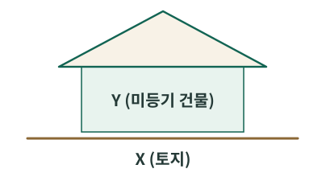

1. 제3자의 용익관계에 미치는 영향
① 저당권 실행으로 인해 저당권은 무조건 소멸한다(민사집행법 제91조 제2항). 즉 후순위저당권자가 경매신청한 경우에 선순위저당권은 소멸한다.
② 최우선순위의 저당권을 설정하기 전에 설정된 선순위 용익물권은 소멸하지 않는다(민사집행법 제91조 제4항). 앞의 선순위저당권과 달리, 선순위 용익물권의 사용수익권능이 저당권실행으로 침해되어서는 아니 되기 때문이다.
③ 최우선순위의 저당권을 설정한 후에 설정된 후순위 용익물권은 소멸한다(민사집행법 제91조 제3항). 순위의 비교는 실행이 신청된 해당 저당권과의 선후 비교가 아니라, 언제나 해당 부동산에 설정된 최우선순위저당권과 용익권의 순위를 비교한다. 후순위저당권이 실행되어도 선순위저당권이 소멸되기 때문이다.
④ 전세권의 경우에는 특칙이 있다(민사집행법 제91조 제4항). 전세권보다 후순위자가 경매신청한 경우에, 전세권은 소멸하지 않으나 전세권자가 배당요구하면 소멸한다.
⑤ 유치권은 소멸하지 않는다(민사집행법 제91조 제5항). 유치권은 우선변제권이 없음에 유의해야 한다.
* 정리: 후순위저당권의 경매신청도 가능하다. 이 경우 선순위저당권도 경매절차 매각(경락)으로 소멸한다(민사집행법 제91조 제2항). 이때 최우선순위 저당권보다 후순위인 용익물권도 소멸한다. 즉, 용익물권의 소멸 여부는 경매신청한 저당권을 기준으로 하는 것이 아니라 최우선순위의 저당권을 기준으로 한다.
대법원 1990. 1. 23. 자 89다카33043 결정
선순위저당권 설정 후 주택임차권이 대항요건을 갖췄다면, 후순위저당권 실행으로 선순위저당권이 소멸할 때 임차권도 소멸한다. 임차인은 경매 매수인에게 대항할 수 없다.
강의안 수록 원문
대법원 1990. 1. 23. 자 89다카33043 결정
후순위저당권의 실행으로 목적부동산이 경락되어 그 선순위저당권이 함께 소멸한 경우 비록 후순위 저당권자에게는 대항할 수 있는 임차권이더라도 소멸된 선순위저당권보다 뒤에 등기되었거나 대항력을 갖춘 임차권은 함께 소멸하므로 이와 같은 경우의 경락인은 주택임대차보호법 제3조에서 말하는 임차주택의 양수인 중에 포함되지 않는다고 할 것이고, 따라서 임차인은 경락인에 대하여 그 임차권의 효력을 주장할 수 없다.
대법원 2007. 12. 13. 선고 2007다57459 판결
선·후순위 근저당권 사이에 한 소유권이전청구권 보전 가등기와 그 본등기는 매각으로 소멸하여 말소촉탁 대상이 된다. 별도의 말소청구로 얻을 이익은 없다.
강의안 수록 원문
대법원 2007. 12. 13. 선고 2007다57459 판결
제1, 2순위의 근저당권설정등기 사이에 소유권이전등기청구권 보전의 가등기가 경료된 부동산에 대하여 위 제1순위 근저당권의 실행을 위한 경매절차에서 매각허가결정이 확정되고 매각대금이 완납된 경우 위 가등기 및 그에 기한 본등기상의 권리는 모두 소멸하고, 위 각 등기는 민사집행법 제144조 제1항 제2호에 규정된 매수인이 인수하지 아니한 부동산의 부담에 관한 기입에 해당하여 말소촉탁의 대상이 되며, 이와 같은 매각허가결정의 확정으로 인한 물권변동의 효력은 그에 관한 등기에 관계없이 이루어지는 것이다. 그리고 소유권이전등기청구권 보전의 가등기 및 그에 기한 본등기의 말소등기절차의 이행을 구하는 소송 도중에 위 각 등기가 경료된 부동산에 대하여 매각허가결정이 확정되고 매각대금이 완납됨으로써 위 각 등기상의 권리가 모두 소멸하고 위 각 등기가 말소촉탁의 대상이 되어 장차 말소될 수밖에 없는 경우에는 더 이상 위 각 등기의 말소를 구할 법률상의 이익이 없다.
2. 법정지상권
(1) 법정지상권 제도의 개관
민법 제366조는“저당물의 경매로 인하여 토지와 그 지상건물이 다른 소유자에 속한 경우에는 토지소유자는 건물소유자에 대하여 지상권을 설정한 것으로 본다(...)”라고 규정한다. 이로써 동일인에게 속하던 토지와 지상건물 중 어느 하나 위에 또는 양자 위에 설정된 저당권의 실행으로 말미암아 그 소유자를 달리하게 된 경우에 건물의 소유자를 위하여 대지에 대한 지상권의 성립을 법률상 인정하는 제도를 두고 있다. 가령 A는 자신의 토지 위에 건물을 완성해 가던 중 자금이 부족하여 토지 위에 저당권을 설정하였으나 그후 경매로 인하여 토지와 건물의 소유자가 달라질 수 있다. 이러한 경우, 토지소유자가 건물소유자를 상대로 건물의 철거를 민법 제214조에 기해 청구할 수 있는 상황이 되는데, 그때 토지소유자와 건물소유자의 토지사용에 관한 이해관계를 조정하기 위해 법정지상권 제도를 규율하고 있는 것이다.
이는 토지와 건물을 별개의 부동산으로 취급하는 법 제도의 운용과정에서 나오는 이해충돌 상황을 조절하기 위한 제도이다. 저당권실행으로 인한 법정지상권에 관한 민법 제366조 이외에도 건물의 전세권에 관한 제305조 1항, 가등기담보 등의 경우 가등기담보 등에 관한 법률 제10조, 입목에 관한 법률 제6조에도 법정지상권에 관한 규정이 있고, 그 밖에 관습법상 법정지상권도 인정되고 있다.
위와 같은 규정들은 ① 건물철거에 따른 사회경제적 손실의 방지하고, ② 관련 당사자의 의사에 부합한다는 점에 그 근거를 두고 있다고 이해된다. 담보설정자 입장에서는 토지 또는 건물 어느 하나를 담보로 제공하면서, 다른 부동산 활용 또는 부담을 전제 또는 용인하였다고 볼 수 있고, 담보권자나 경매절차상 매수인(경락인) 입장에서는 그 다른 부동산에 대한 편익 또는 부담을 전제하고 권리를 취득한 것으로 볼 수 있기 때문이다.
결론적으로 법정지상권은 그 부담을 통한 토지소유권의 제한으로서, 가치권으로서의 저당권과 담보목적물 및 그 용익에 견련되어 있는 다른 부동산의 용익적 가치 제고 사이의 조화를 추구한다. 토지에 대한 저당권자나 법정지상권의 부담을 안은 채 토지소유권을 경매절차에서 매수한 자 사이의 이익과 건물의 소유권을 취득한 자 사이의 이해관계 조절이 법정지상권 규율의 핵심이고, 이는 법정지상권의 인정요건을 통해 구현되고 있다.
대법원 1988. 10. 25. 선고 87다카1564 판결
민법 제366조의 법정지상권은 건물 유지라는 공익을 위해 인정된다. 저당권 설정 당사자가 미리 법정지상권을 배제하기로 약정해도 효력이 없다.
강의안 수록 원문
대법원 1988. 10. 25. 선고 87다카1564 판결
민법 제366조는 가치권과 이용권의 조절을 위한 공익상의 이유로 지상권의 설정을 강제하는 것이므로 저당권설정 당사자간의 특약으로 저당목적물인 토지에 대하여 법정지상권을 배제하는 약정을 하더라도 그 특약은 효력이 없다(☞ 법정지상권의 강행규정성, A가 자신 소유의 토지 위에 건물을 축조한 후 B에게 토지에 저당권설정과 함께 건물에 대하여는 미등기상태로 건물을 양도담보로 제공하면서 채무 미납시 건물을 B의 뜻대로 하라는 약정을 하였고, 이후 B의 저당권이 실행되어 C가 토지를 경락을 받았을경우 C가 A에게 건물의 철거를 주장하였으나, 해당 약정을 무효로 본 사안).
(2) 성립요건
(가) 성립요건은 위에서 말한 바와 같이, 토지 저당권자와 이를 경매절차에서 매수한 사람의 부담 내지 희생에 관한 정당화 근거와 ‘법정’지상권으로서의 보충적 성격(즉, 약정지상권 등 토지사용관계에 관한 당사자 간 법률행위의 우선)이라는 측면에서 살펴보아야 한다. 주요 요건은 ① (최선순위) 저당권 설정 당시의 토지 및 건물 존재, ② 그 설정 당시의 토지 및 건물의 소유자 동일성, ③ 토지나 건물 또는 토지 및 건물에 저당권이 설정되어 있을 것, ④ 경매로 토지와 건물의 소유자가 달라질 것을 요건으로 하고 있다.
(나) 저당권의 설정
이 요건은 뒤에서 다룰 관습법상 법정지상권과의 한계 획정에 기능한다.
(다) 저당권설정 당시의 건물의 존재
(a) 저당권설정 당시 vs. 저당권설정 이후의 건물(견해대립)
- 소수의 견해: 건물철거에 따른 사회경제적 이익 훼손의 측면 및 토지저당권 설정 이후 축조한 건물에 대한 민법 제365조의 취지 확장 시도 ➠ 저당권 설정 후에 건립된 건물에 대해서도 민법 제366조 적용 시도
- 다수의 견해: 저당권자는 토지저당권 설정 당시의 상태를 기준으로 담보물의 가치를 파악함(저당권자의 담보가치에 대한 기대보장 필요)
물론 토지저당권 설정자의 무단 건축에 대하여 토지저당권자는 민법 제388조(담보손상에 따른 기한이익 상실), 제362조(담보물보충) 등으로 보호할 수 있으나, 충분하지 않을 수 있음 저당권설정 후 건물건립된 경우는 민법 제365조의 규율사안
대법원 1978. 8. 22. 선고 78다630 판결
나대지에 저당권을 설정한 뒤 건물을 새로 지은 경우 건물 소유자는 그 토지의 저당권 실행을 이유로 민법 제366조의 법정지상권을 취득하지 못한다.
강의안 수록 원문
대법원 1978. 8. 22. 선고 78다630 판결
민법 제366조의 규정은 저당권설당시부터 저당권의 목적되는 토지 위에 건물이 존재할 경우에 한하여 법정지상권이 성립되며 건물없는 토지에 대하여 저당권이 설정되었는데 그 후에 설정자가 그 위에 건물을 건축한 경우에는 법정지상권이 생긴다고 할 수 없다는 종전의 대법원판례는 아직 변경할 필요가 없다.
(b) 개별 유형별 분석과 판례의 태도
- 건물이 없는 토지에 저당권을 설정한 후 저당권자의 양해에 따라 건물을 신축한 경우
대법원 2003. 9. 5. 선고 2003다26051 판결
나대지에 저당권을 설정할 당시 저당권자가 장래의 건축에 동의했더라도, 건축을 시작하지 않은 상태였다면 나중에 지어진 건물에 법정지상권은 성립하지 않는다.
강의안 수록 원문
대법원 2003. 9. 5. 선고 2003다26051 판결
민법 제366조의 법정지상권은 저당권 설정 당시부터 저당권의 목적되는 토지 위에 건물이 존재할 경우에 한하여 인정되며, 토지에 관하여 저당권이 설정될 당시 그 지상에 토지소유자에 의한 건물의 건축이 개시되기 이전이었다면, 건물이 없는 토지에 관하여 저당권이 설정될 당시 근저당권자가 토지소유자에 의한 건물의 건축에 동의하였다고 하더라도 그러한 사정은 주관적 사항이고 공시할 수도 없는 것이어서 토지를 낙찰받는 제3자로서는 알 수 없는 것이므로 그와 같은 사정을 들어 법정지상권의 성립을 인정한다면 토지 소유권을 취득하려는 제3자의 법적 안정성을 해하는 등 법률관계가 매우 불명확하게 되므로 법정지상권이 성립되지 않는다.
- 저당권설정 당시 건물이 건축중이었던 경우
대법원 1992. 6. 12. 선고 92다7221 판결
저당권 설정 당시 건축 중이고 외형상 규모·종류를 예상할 수 있었다면 법정지상권을 인정할 수 있다. 이를 취득할 지위에 있는 사람에게 철거를 청구하는 것은 신의칙에 반한다.
강의안 수록 원문
대법원 1992. 6. 12. 선고 92다7221 판결
가. 민법 제366조 소정의 법정지상권은 저당권 설정 당시 동일인의 소유에 속하던 토지와 건물이 경매로 인하여 양자의 소유자가 다르게 된 때에 건물의 소유자를 위하여 발생하는 것으로서, 토지에 관하여 저당권이 설정될 당시 그 지상에 건물이 위 토지 소유자에 의하여 건축중이었고, 그것이 사회관념상 독립된 건물로 볼 수 있는 정도에 이르지 않았다 하더라도 건물의 규모, 종류가 외형상 예상할 수 있는 정도까지 건축이 진전되어 있는 경우에는, 저당권자는 완성될 건물을 예상할 수 있으므로 법정지상권을 인정하여도 불측의 손해를 입는 것이 아니며 사회경제적으로도 건물을 유지할 필요가 인정되기 때문에 법정지상권의 성립을 인정함이 상당하다고 해석된다.
나. 법정지상권을 취득할 지위에 있는 자에 대하여 토지 소유자가 소유권에 기하여 건물의 철거를 구함은 신의성실의 원칙상 허용될 수 없다.
대법원 2011. 1. 13. 선고 2010다67159 판결
저당권 설정 당시 건물의 규모·종류를 외형상 예상할 수 있었고 매각대금 완납 때까지 기둥·지붕·주벽 등을 갖춰 독립한 건물이 되었다면 법정지상권이 성립한다.
강의안 수록 원문
대법원 2011. 1. 13. 선고 2010다67159 판결
[1] 민법 제366조의 법정지상권은 저당권설정 당시 동일인의 소유에 속하던 토지와 건물이 경매로 인하여 양자의 소유자가 다르게 된 때에 건물의 소유자를 위하여 발생하는 것으로서, 토지에 관하여 저당권이 설정될 당시 토지 소유자에 의하여 그 지상에 건물이 건축 중이었던 경우 그것이 사회관념상 독립된 건물로 볼 수 있는 정도에 이르지 않았다 하더라도 건물의 규모, 종류가 외형상 예상할 수 있는 정도까지 건축이 진전되어 있었고, 그 후 경매절차에서 매수인이 매각대금을 다 낸 때까지 최소한의 기둥과 지붕 그리고 주벽이 이루어지는 등 독립된 부동산으로서 건물의 요건을 갖춘 경우에는 법정지상권이 성립한다.
- 저당권 설정 당시의 건물이 설정 이후 개축․증축된 경우 vs. 멸실・철거 후 재건축
① 토지에 대한 단독저당이 설정된 사안: 동일성 상실 여부! → 동일성 상실하면 구 건물 기준으로 성립
대법원 1985. 5. 14. 선고 85다카13 판결
법정지상권을 취득할 당시의 건물과 동일성이 유지되는 한 일부 증축·개축이나 지붕 변경만으로 지상권은 소멸하지 않는다. 이 판결은 전면 멸실 후의 신축과 구별했다.
강의안 수록 원문
대법원 1985. 5. 14. 선고 85다카13 판결
법정지상권 취득당시의 건물이 멸실되어 다시 신축하거나 건물의 독립성을 인정할 수 없을 정도로 훼멸된 것을 새로운 독립된 건물로 개축하여 양 건물이 동일성이 상실한 경우에는 건물소유를 위한 법정지상권은 소멸하나 기왕의 건물의 일부를 증, 개축하여 그 면적에 다소의 증감이 있었거나 지붕이나 구조에 일부 변동이 있는 사실만으로는 건물의 동일성을 상실한다고 볼 수 없으므로 그 건물의 소유를 위한 법정지상권은 여전히 존속한다.
대법원 1991. 4. 26. 선고 90다19985 판결
건물이 있는 토지에 저당권을 설정한 뒤 경매 전에 건물을 개축·증축하거나 재축·신축했더라도 법정지상권이 성립할 수 있다. 존속기간과 토지 이용 범위는 옛 건물을 기준으로 정한다.
강의안 수록 원문
대법원 1991. 4. 26. 선고 90다19985 판결
민법 제366조 소정의 법정지상권이 성립하려면 저당권의 설정 당시 저당권의 목적이 되는 토지 위에 건물이 존재하여야 하고, 저당권 설정 당시 건물이 존재한 이상 그 이후 건물을 개축, 증축하는 경우는 물론이고 건물이 멸실되거나 철거된 후 재축, 신축하는 경우에도 법정지상권이 성립하며, 이 경우의 법정지상권의 내용인 존속기간, 범위 등은 구 건물을 기준으로 하여 그 이용에 일반적으로 필요한 범위 내로 제한된다(☞ 앞의 85다카13 판결과 비교).
② 토지와 그 지상건물에 관하여 공동저당권이 설정된 경우
대법원 2003. 12. 18. 선고 98다43601 전원합의체 판결
토지와 건물에 공동저당권을 설정한 뒤 건물을 철거하고 새로 지었다면, 신축건물에 동순위 공동저당권을 설정하는 등의 특별한 사정이 없는 한 신축건물을 위한 법정지상권은 성립하지 않는다.
강의안 수록 원문
대법원 2003. 12. 18. 선고 98다43601 전원합의체 판결
동일인의 소유에 속하는 토지 및 그 지상 건물에 관하여 공동저당권이 설정된 후 그 지상 건물이 철거되고 새로 건물이 신축된 경우에는 그 신축건물의 소유자가 토지의 소유자와 동일하고 토지의 저당권자에게 신축건물에 관하여 토지의 저당권과 동일한 순위의 공동저당권을 설정해 주는 등 특별한 사정이 없는 한 저당물의 경매로 인하여 토지와 그 신축건물이 다른 소유자에 속하게 되더라도 그 신축건물을 위한 법정지상권은 성립하지 않는다고 해석하여야 하는바, 그 이유는 동일인의 소유에 속하는 토지 및 그 지상 건물에 관하여 공동저당권이 설정된 경우에는, 처음부터 지상 건물로 인하여 토지의 이용이 제한 받는 것을 용인하고 토지에 대하여만 저당권을 설정하여 법정지상권의 가치만큼 감소된 토지의 교환가치를 담보로 취득한 경우와는 달리, 공동저당권자는 토지 및 건물 각각의 교환가치 전부를 담보로 취득한 것으로서, 저당권의 목적이 된 건물이 그대로 존속하는 이상은 건물을 위한 법정지상권이 성립해도 그로 인하여 토지의 교환가치에서 제외된 법정지상권의 가액 상당 가치는 법정지상권이 성립하는 건물의 교환가치에서 되찾을 수 있어 궁극적으로 토지에 관하여 아무런 제한이 없는 나대지로서의 교환가치 전체를 실현시킬 수 있다고 기대하지만, 건물이 철거된 후 신축된 건물에 토지와 동순위의 공동저당권이 설정되지 아니 하였는데도 그 신축건물을 위한 법정지상권이 성립한다고 해석하게 되면, 공동저당권자가 법정지상권이 성립하는 신축건물의 교환가치를 취득할 수 없게 되는 결과 법정지상권의 가액 상당 가치를 되찾을 길이 막혀 위와 같이 당초 나대지로서의 토지의 교환가치 전체를 기대하여 담보를 취득한 공동저당권자에게 불측의 손해를 입게 하기 때문이다(☞ 당사자의 합리적 의사, 저당권자의 담보가치에대한 이익 보호, 금융제도의 합리적 운영, 공익적 요청의 실현).
대법원 2025. 9. 25. 선고 2025다212804 판결
공동저당 목적이던 건물이 멸실된 뒤 신축건물에 동순위 공동저당을 설정하는 등 특별한 사정이 없으면 신축건물의 법정지상권은 성립하지 않는다. 저당권자가 물상대위로 옛 건물 가치의 일부나 전부를 회수했어도 같다.
강의안 수록 원문
대법원 2025. 9. 25. 선고 2025다212804 판결
동일인의 소유에 속하는 토지 및 그 지상 건물에 관하여 공동저당권이 설정된 후 그 지상 건물이 멸실되거나 철거되고 건물이 신축된 경우에, 그 신축건물 소유자가 토지 소유자와 동일하고 토지의 저당권자에게 신축건물에 관하여 토지의 저당권과 동일한 순위의 공동저당권을 설정해 주는 등 특별한 사정이 없는 한, 저당물의 경매로 인하여 토지와 신축건물이 다른 소유자에게 속하게 되더라도 그 신축건물을 위한 법정지상권은 성립하지 않는다. 건물이 멸실되거나 철거된 후 신축된 건물에 토지와 동순위의 공동저당권이 설정되지 아니하였는데도 그 신축건물을 위한 법정지상권이 성립한다고 해석하게 되면, 공동저당권자가 법정지상권이 성립하는 신축건물의 교환가치를 취득할 수 없게 되는 결과 법정지상권의 가액 상당 가치를 되찾을 길이 막혀 당초 토지에 관하여 아무런 제한이 없는 나대지로서의 교환가치 전체를 실현시킬 수 있다고 기대하고 담보를 취득한 공동저당권자에게 불측의 손해를 입히기 때문이다. 이러한 법리는, 저당권자가 민법 제370조, 제342조에 따른 물상대위권 행사 등을 통하여 멸실된 건물의 가액 전부 또는 일부에 관한 만족을 얻은 경우에도 마찬가지라고 보아야 한다.
대법원 2010. 1. 14. 선고 2009다66150 판결
공동저당 설정 후 옛 건물과 동일성이 없는 건물을 신축하여 저당권자가 신축건물의 교환가치를 취득하지 못했다면, 특별한 사정 없이 신축건물을 위한 법정지상권을 인정할 수 없다.
강의안 수록 원문
대법원 2010. 1. 14. 선고 2009다66150 판결
동일인의 소유에 속하는 토지 및 그 지상 건물에 관하여 공동저당권이 설정된 후 그 지상 건물이 철거되고 새로 건물이 신축되어 두 건물 사이의 동일성이 부정되는 결과 공동저당권자가 신축건물의 교환가치를 취득할 수 없게 되었다면, 공동저당권자의 불측의 손해를 방지하기 위하여, 특별한 사정이 없는 한 저당물의 경매로 인하여 토지와 그 신축건물이 다른 소유자에 속하게 되더라도 그 신축건물을 위한 법정지상권은 성립하지 않는다.
대법원 2014. 9. 4. 선고 2011다73038, 73045 판결
공동저당 목적 건물을 철거한 뒤 신축한 경우의 법정지상권 제한은 집합건물에도 적용된다. 일부 전유부분과 대지지분만 공동저당 목적이었어도 마찬가지다.
강의안 수록 원문
대법원 2014. 9. 4. 선고 2011다73038, 73045 판결
동일인의 소유에 속하는 토지 및 그 지상건물에 관하여 공동저당권이 설정된 후 지상 건물이 철거되고 새로 건물이 신축된 경우에, 신축건물의 소유자가 토지의 소유자와 동일하고 토지의 저당권자에게 신축건물에 관하여 토지의 저당권과 동일한 순위의 공동저당권을 설정해 주는 등 특별한 사정이 없는 한, 저당물의 경매로 인하여 토지와 신축건물이 다른 소유자에 속하게 되더라도 신축건물을 위한 법정지상권은 성립하지 않는다. 이는 건물이 철거된 후 신축된 건물에 토지와 동순위의 공동저당권이 설정되지 아니하였는데도 신축건물을 위한 법정지상권이 성립한다고 해석하게 되면, 공동저당권자가 법정지상권이 성립하는 신축건물의 교환가치를 취득할 수 없게 되는 결과 법정지상권의 가액 상당 가치를 되찾을 길이 막혀 당초 토지에 관하여 아무런 제한이 없는 나대지로서의 교환가치 전체를 실현시킬 수 있다고 기대하고 담보를 취득한 공동저당권자에게 불측의 손해를 입게 하기 때문으로서, 이러한 법리는 집합건물의 전부 또는 일부 전유부분과 대지 지분에 관하여 공동저당권이 설정된 후 그 지상 집합건물이 철거되고 새로운 집합건물이 신축된 경우에도 마찬가지로 보아야 한다.
③ 토지와 지상건물에 별개의 저당권이 설정된 후 건물이 철거되고 재건축되는 경우 ➠ 토지와 건물 양자가 함께 저당권의 객체로 되었든, 양자 위에 각각 독립한 별개의 저당권이 설정되었는 민법 제366조의 법정지상권이 성립하는 데에는 아무 상관이 없다고 봄 → 위 ①에 준하여 판단(동일성!)
- 지상건물 없는 토지에 대한 저당권 설정 후 지상건물이 신축된 경우
대법원 1995. 12. 11. 자 95마1262 결정
빈 땅에 저당권을 설정한 후 건축하고 토지 저당권 실행으로 건물과 토지 소유자가 달라진 경우, 민법 제366조의 법정지상권과 관습법상 법정지상권이 모두 성립하지 않는다.
강의안 수록 원문
대법원 1995. 12. 11. 자 95마1262 결정
건물 없는 토지에 저당권이 설정된 후 저당권설정자가 그 위에 건물을 건축하였다가 담보권의 실행을 위한 경매절차에서 경매로 인하여 그 토지와 지상 건물이 소유자를 달리하였을 경우에는, 민법 제366조의 법정지상권이 인정되지 아니할 뿐만 아니라 관습상의 법정지상권도 인정되지 아니한다.
- 토지와 건물이 공동저당의 목적물이 된 후에 건물이 다른 건물과 합동되어 독립성을 상실한 경우
대법원 2010. 1. 14. 선고 2009다66150 판결
건물의 합동으로 기존 건물의 독립성이 사라지면 저당권은 합동 후 건물의 해당 공유지분에 존속한다. 법정지상권을 인정할 경우에도 토지 이용 범위는 종전 건물의 이용에 필요한 한도다.
강의안 수록 원문
대법원 2010. 1. 14. 선고 2009다66150 판결
[2] 경매대상 건물이 인접한 다른 건물과 합동됨으로 인하여 건물로서의 독립성을 상실하게 되었다면 경매대상 건물만을 독립하여 양도하거나 경매의 대상으로 삼을 수는 없고, 이러한 경우 경매대상 건물에 대한 채권자의 저당권은 위 합동으로 인하여 생겨난 새로운 건물 중에서 위 경매대상 건물이 차지하는 비율에 상응하는 공유지분 위에 존속하게 된다.
[3] 동일인 소유 토지와 그 지상 건물에 공동근저당권이 설정된 후 그 건물이 다른 건물과 합동(合棟)되어 신건물이 생겼고 그 후 경매로 토지와 신건물이 다른 소유자에게 속하게 됨에 따라 신건물을 위한 법정지상권이 성립한 사안에서, 그 법정지상권의 내용인 존속기간과 범위 등은 종전 건물을 기준으로 하여 그 이용에 일반적으로 필요한 범위 내로 제한된다고 하여야 함에도 법정지상권이 신건물 전체의 유지·사용을 위해 필요한 범위에서 성립한다고 본 원심판결을 파기한 사례.
대법원 2013. 3. 14. 선고 2012다108634 판결
토지와 건물의 공동저당 설정 뒤 건물 등기부가 폐쇄됐어도 건물 자체가 존속하면 신축·멸실과 같게 취급하지 않는다. 경매로 소유자가 달라지면 법정지상권이 성립할 수 있다.
강의안 수록 원문
대법원 2013. 3. 14. 선고 2012다108634 판결
민법 제366조의 법정지상권은 저당권 설정 당시에 동일인의 소유에 속하는 토지와 건물이 저당권의 실행에 의한 경매로 인하여 각기 다른 사람의 소유에 속하게 된 경우에 건물의 소유를 위하여 인정되는 것으로서, 이는 동일인의 소유에 속하는 토지 및 그 지상 건물에 대하여 공동저당권이 설정되었으나 그중 하나에 대하여만 경매가 실행되어 소유자가 달라지게 된 경우에도 마찬가지이다. 다만 위와 같이 공동저당권이 설정된 후 그 지상 건물이 철거되고 새로 건물이 신축되어 두 건물 사이의 동일성이 부정되는 결과 공동저당권자가 신축건물의 교환가치를 취득할 수 없게 되었다면, 공동저당권자의 불측의 손해를 방지하기 위하여, 특별한 사정이 없는 한 저당물의 경매로 인하여 토지와 그 신축건물이 다른 소유자에 속하게 되더라도 그 신축건물을 위한 법정지상권은 성립하지 않는다고 볼 것이나, 토지와 함께 공동근저당권이 설정된 건물이 그대로 존속함에도 불구하고 사실과 달리 등기부에 멸실의 기재가 이루어지고 이를 이유로 등기부가 폐쇄된 경우, 저당권자로서는 멸실 등으로 인하여 폐쇄된 등기기록을 부활하는 절차 등을 거쳐 건물에 대한 저당권을 행사하는 것이 불가능한 것이 아닌 이상 저당권자가 건물의 교환가치에 대하여 이를 담보로 취득할 수 없게 되는 불측의 손해가 발생한 것은 아니라고 보아야 하므로, 그 후 토지에 대하여만 경매절차가 진행된 결과 토지와 건물의 소유자가 달라지게 되었다면 그 건물을 위한 법정지상권은 성립한다 할 것이고, 단지 건물에 대한 등기부가 폐쇄되었다는 사정만으로 건물이 멸실된 경우와 동일하게 취급하여 법정지상권이 성립하지 아니한다고 할 수는 없다.
- 저당권 설정 당시 담보지상권이 설정되어 있던 경우
대법원 1991. 10. 11. 선고 91다23462 판결
토지 저당권자에게 지상권도 함께 설정했더라도 기존 건물을 철거할 약정 등 특별한 사정이 없고 경매로 담보지상권이 소멸했다면 건물을 위한 법정지상권이 성립할 수 있다.
강의안 수록 원문
대법원 1991. 10. 11. 선고 91다23462 판결
대지에 대하여 저당권을 설정할 당시 저당권자를 위하여 동시에 지상권을 설정하여 주었다고 하더라도 저당권 설정 당시 이미 그 대지상에 건물을 소유하고 있고 그 건물에 관하여 이를 철거하기로 하는 등 특별한 사유가 없으며, 저당권의 실행으로 그 지상권도 소멸한 경우에는 건물을 위한 법정지상권이 발생하지 않는다고 할 수 없다.
- 무허가・미등기건물
대법원 2004. 6. 11. 선고 2004다13533 판결
설정 당시 규모·종류를 예상할 수 있을 만큼 건축이 진행됐고 대금 완납 시 독립된 건물이 되었다면, 건물이 미등기라는 사정은 법정지상권 성립을 막지 않는다.
강의안 수록 원문
대법원 2004. 6. 11. 선고 2004다13533 판결
민법 제366조의 법정지상권은 저당권 설정 당시 동일인의 소유에 속하던 토지와 건물이 경매로 인하여 양자의 소유자가 다르게 된 때에 건물의 소유자를 위하여 발생하는 것으로서, 토지에 관하여 저당권이 설정될 당시 토지 소유자에 의하여 그 지상에 건물을 건축중이었던 경우 그것이 사회관념상 독립된 건물로 볼 수 있는 정도에 이르지 않았다 하더라도 건물의 규모·종류가 외형상 예상할 수 있는 정도까지 건축이 진전되어 있었고, 그 후 경매절차에서 매수인이 매각대금을 다 낸 때까지 최소한의 기둥과 지붕 그리고 주벽이 이루어지는 등 독립된 부동산으로서 건물의 요건을 갖추면 법정지상권이 성립하며, 그 건물이 미등기라 하더라도 법정지상권의 성립에는 아무런 지장이 없는 것이다(☞ 저당권자는 설정 당시 건물의 존재 여부를 확인하고 토지의 담보가치를 평가함이 보통임, 따라서 무허가・미등기건물이라도 “저당권설정 당시 건물의 존재” 요건에는 해당, 단, 소유자동일성 요건에서는 아래에서 보는 바와 같은 별도쟁점 있음).
- 가설건축물
대법원 2021. 10. 28. 선고 2020다224821 판결
일시 사용 후 철거를 예정한 가설건축물은 특별한 사정이 없는 한 토지에 정착한 독립한 부동산이 아니다. 이런 구조물을 위해 민법 제366조의 법정지상권은 성립하지 않는다.
강의안 수록 원문
대법원 2021. 10. 28. 선고 2020다224821 판결
민법 제366조의 법정지상권은 저당권 설정 당시 동일인의 소유에 속하던 토지와 건물이 경매로 인하여 양자의 소유자가 다르게 된 때에 건물의 소유자를 위하여 발생하는 것으로서, 법정지상권이 성립하려면 경매절차에서 매수인이 매각대금을 다 낸 때까지 해당 건물이 독립된 부동산으로서 건물의 요건을 갖추고 있어야 한다.
독립된 부동산으로서 건물은 토지에 정착되어 있어야 하는데(민법 제99조 제1항), 가설건축물은 일시 사용을 위해 건축되는 구조물로서 설치 당시부터 일정한 존치기간이 지난 후 철거가 예정되어 있어 일반적으로 토지에 정착되어 있다고 볼 수 없다. 민법상 건물에 대한 법정지상권의 최단 존속기간은 견고한 건물이 30년, 그 밖의 건물이 15년인 데 비하여, 건축법령상 가설건축물의 존치기간은 통상 3년 이내로 정해져 있다. 따라서 가설건축물은 특별한 사정이 없는 한 독립된 부동산으로서 건물의 요건을 갖추지 못하여 법정지상권이 성립하지 않는다.
- 나대지에 저당권이 설정되었는데, 이후 토지소유자에 의해 건물이 건립되고 그 건물에 대하여 저당권이 설정되었는데, ① 이후 그 건물에 설정된 저당권의 실행으로 토지와 건물의 소유가 달라진 경우, ② 토지저당권의 실행으로 토지와 건물의 소유가 달라진 경우, ③ 건물저당권 실행 후, 다시 토지저당권 실행된 경우는?
건물저당권: 요건 구비 O, 토지저당권: 요건 구비 X, ∴ ③의 경우: 법정지상권 소멸
(라) 저당권설정 당시의 소유자의 동일성
(a) 건물과 토지의 소유자가 상이할 경우에는 토지소유자에 대항할 수 있는 별도의 용익권이 설정되어 있을 경우 빈번함(보충성의 표현) ➠ 법정지상권 성립 여부 검토 전에 확인할 필요 있음
(b) 저당권 설정 이후에 건물이나 토지 중 한 쪽이 제3자에게 양도된 경우
가령, A가 대지와 건물을 소유하던 중에 대지에 관한 B 명의의 저당권 설정하고, 이후 C에 대하여 건물을 매각하고 이전등기까지 마친 경우에, B의 저당권이 실행되면 경매절차 매수인인 D가 C에 대하여 건물철거 및 대지인도를 청구할 수 있는지 문제 된다.
대법원 1999. 11. 23. 선고 99다52602 판결
토지와 건물이 같은 사람 소유일 때 토지에 저당권이 설정되었다면, 경매 전에 건물을 양수한 제3자도 토지 경매로 건물을 위한 법정지상권을 취득한다.
강의안 수록 원문
대법원 1999. 11. 23. 선고 99다52602 판결
토지에 저당권을 설정할 당시 토지의 지상에 건물이 존재하고 있었고 그 양자가 동일 소유자에게 속하였다가 그 후 저당권의 실행으로 토지가 낙찰되기 전에 건물이 제3자에게 양도된 경우, 민법 제366조 소정의 법정지상권을 인정하는 법의 취지가 저당물의 경매로 인하여 토지와 그 지상 건물이 각 다른 사람의 소유에 속하게 된 경우에 건물이 철거되는 것과 같은 사회경제적 손실을 방지하려는 공익상 이유에 근거하는 점, 저당권자로서는 저당권설정 당시에 법정지상권의 부담을 예상하였을 것이고 또 저당권설정자는 저당권설정 당시의 담보가치가 저당권이 실행될 때에도 최소한 그대로 유지되어 있으면 될 것이므로 위와 같은 경우 법정지상권을 인정하더라도 저당권자 또는 저당권설정자에게는 불측의 손해가 생기지 않는 반면, 법정지상권을 인정하지 않는다면 건물을 양수한 제3자는 건물을 철거하여야 하는 손해를 입게 되는 점 등에 비추어 위와 같은 경우 건물을 양수한 제3자는 민법 제366조 소정의 법정지상권을 취득한다(☞ 관습법상 법정지상권 상황과 비교해볼 필요 있음).
(c) 미등기건물을 대지와 함께 매수하였으나 대지에 관한 등기만을 넘겨받고 대지에 대한 저당권을 설정하여 저당권이 실행된 경우
가령, A가 자신이 소유하던 대지 위에 무허가・미등기건물을 건립하고, 그 대지 및 건물을 B에게 매도하였으나, 대지에 관한 소유권이전등기만 마쳤고, 이후 C가 대지에 관한 근저당권을 설정한 경우, 그 근저당권실행을 위한 경매절차에서 위 대지를 매수한 D가 B를 상대로 미등기・무허가건물의 철거 및 대지의 인도를 청구할 수 있는지가 문제 된다.
대법원 2002. 6. 20. 선고 2002다9660 전원합의체 판결
미등기건물과 땅을 함께 샀어도 토지 등기만 넘겨받았다면 건물 소유권은 매도인에게 있다. 그 상태에서 설정한 토지 저당권의 실행으로는 법정지상권이 생기지 않는다.
강의안 수록 원문
대법원 2002. 6. 20. 선고 2002다9660 전원합의체 판결
민법 제366조의 법정지상권은 저당권 설정 당시에 동일인의 소유에 속하는 토지와 건물이 저당권의 실행에 의한 경매로 인하여 각기 다른 사람의 소유에 속하게 된 경우에 건물의 소유를 위하여 인정되는 것이므로, 미등기건물을 그 대지와 함께 매수한 사람이 그 대지에 관하여만 소유권이전등기를 넘겨받고 건물에 대하여는 그 등기를 이전 받지 못하고 있다가, 대지에 대하여 저당권을 설정하고 그 저당권의 실행으로 대지가 경매되어 다른 사람의 소유로 된 경우에는, 그 저당권의 설정 당시에 이미 대지와 건물이 각각 다른 사람의 소유에 속하고 있었으므로 법정지상권이 성립될 여지가 없다.
(d) 대지소유자가 건물을 명의신탁하여 타인 명의로 되어 있는 경우
대법원 1995. 5. 23. 선고 93다47318 판결
건물 등기명의를 타인에게 신탁한 사람은 제3자에게 건물의 소유권을 주장할 수 없다. 토지와 건물이 자기 소유라는 전제에서 법정지상권을 취득하지 못한다.
강의안 수록 원문
대법원 1995. 5. 23. 선고 93다47318 판결
민법 제366조 소정의 법정지상권은 저당권 설정 당시 동일인의 소유에 속하던 토지와 그 지상건물이 경매로 인하여 각기 그 소유자가 다르게 된 때에 건물의 소유자를 위하여 발생하는 것이므로, 토지와 그 지상건물이 각기 소유자를 달리하고 있던 중 토지 또는 그 지상건물만이 경매에 의하여 다른사람에게 소유권이 이전된 경우에는 위 법조 소정의 법정지상권이 발생할 여지가 없으며, 또 건물의 등기부상 소유명의를 타인에게 신탁한 경우에 신탁자는 제3자에게 그 건물이 자기의 소유임을 주장할 수 없고, 따라서 그 건물과 부지인 토지가 동일인의 소유임을 전제로 한 법정지상권을 취득할 수 없다.
대법원 2004. 2. 13. 선고 2003다29043 판결
건물 명의신탁자는 제3자에 대한 관계에서 건물이 자기 소유라고 주장할 수 없어, 토지와 건물의 동일인 소유를 전제로 한 법정지상권을 취득하지 못한다.
강의안 수록 원문
대법원 2004. 2. 13. 선고 2003다29043 판결
건물의 등기부상 소유명의를 타인에게 신탁한 경우에 신탁자는 제3자에게 그 건물이 자기의 소유임을 주장할 수 없고, 따라서 그 건물과 부지인 토지가 동일인의 소유임을 전제로 한 법정지상권을 취득할 수 없다.
(e) 공유와 구분소유적 공유관계
대법원 1987. 6. 23. 선고 86다카2188 판결
공유토지 위에 건물을 가진 공유자 한 사람이 토지지분을 처분해도 다른 공유자 지분에까지 부담을 지울 수는 없다. 이 경우 건물에 관습법상 법정지상권은 성립하지 않는다.
강의안 수록 원문
대법원 1987. 6. 23. 선고 86다카2188 판결
토지의 공유자 중의 1인이 공유토지 위에 건물을 소유하고 있다가 토지지분만을 전매함으로써 단순히 토지공유자의 1인에 대하여 관습상의 법정지상권이 성립된 것으로 볼 사유가 발생하였다고 하더라도 당해 토지 자체에 관하여 건물의 소유를 위한 관습상의 법정지상권이 성립된 것으로 보게 된다면 이는 마치 토지공유자의 1인으로 하여금 다른 공유자의 지분에 대하여서까지 지상권설정의 처분행위를 허용하는 셈이 되어 부당하다 할 것이므로 위와 같은 경우에 있어서는 당해 토지에 관하여 건물의 소유를 위한 관습상의 법정지상권이 성립될 수 없다.
대법원 2011. 1. 13. 선고 2010다67159 판결
건물공유자 한 명이 그 부지를 단독 소유하다가 토지의 저당권 실행으로 소유권을 잃으면, 건물공유자들은 토지 전체에 건물의 존속을 위한 법정지상권을 취득한다.
강의안 수록 원문
대법원 2011. 1. 13. 선고 2010다67159 판결
건물공유자의 1인이 그 건물의 부지인 토지를 단독으로 소유하면서 그 토지에 관하여만 저당권을 설정하였다가 위 저당권에 의한 경매로 인하여 토지의 소유자가 달라진 경우에도, 위 토지 소유자는 자기뿐만 아니라 다른 건물공유자들을 위하여도 위 토지의 이용을 인정하고 있었다고 할 것인 점, 저당권자로서도 저당권 설정 당시 법정지상권의 부담을 예상할 수 있었으므로 불측의 손해를 입는 것이 아닌 점, 건물의 철거로 인한 사회경제적 손실을 방지할 공익상의 필요성도 인정되는 점 등에 비추어 위 건물공유자들은 민법 제366조에 의하여 토지 전부에 관하여 건물의 존속을 위한 법정지상권을 취득한다고 보아야 한다.
대법원 2014. 9. 4. 선고 2011다73038,73045 판결
토지 공유자 일부의 지분만 경매된 경우 건물 소유를 위해 다른 공유자의 지분에까지 미치는 법정지상권이 생기지 않는다. 토지와 건물이 모두 공유일 때도 같다.
강의안 수록 원문
대법원 2014. 9. 4. 선고 2011다73038,73045 판결
[1] 토지공유자의 한 사람이 다른 공유자의 지분 과반수의 동의를 얻어 건물을 건축한 후 토지와 건물의 소유자가 달라진 경우 토지에 관하여 관습법상의 법정지상권이 성립되는 것으로 보게 되면 이는 토지공유자의 1인으로 하여금 자신의 지분을 제외한 다른 공유자의 지분에 대하여서까지 지상권설정의 처분행위를 허용하는 셈이 되어 부당하다. 그리고 이러한 법리는 민법 제366조의 법정지상권의 경우에도 마찬가지로 적용되고, 나아가 토지와 건물 모두가 각각 공유에 속한 경우에 토지에 관한 공유자 일부의 지분만을 목적으로 하는 근저당권이 설정되었다가 경매로 인하여 그 지분을 제3자가 취득하게 된 경우에도 마찬가지로 적용된다.
[2] 동일인의 소유에 속하는 토지 및 그 지상건물에 관하여 공동저당권이 설정된 후 지상 건물이 철거되고 새로 건물이 신축된 경우에, 신축건물의 소유자가 토지의 소유자와 동일하고 토지의 저당권자에게 신축건물에 관하여 토지의 저당권과 동일한 순위의 공동저당권을 설정해 주는 등 특별한 사정이 없는 한, 저당물의 경매로 인하여 토지와 신축건물이 다른 소유자에 속하게 되더라도 신축건물을 위한 법정지상권은 성립하지 않는다. 이는 건물이 철거된 후 신축된 건물에 토지와 동순위의 공동저당권이 설정되지 아니하였는데도 신축건물을 위한 법정지상권이 성립한다고 해석하게 되면, 공동저당권자가 법정지상권이 성립하는 신축건물의 교환가치를 취득할 수 없게 되는 결과 법정지상권의 가액 상당 가치를 되찾을 길이 막혀 당초 토지에 관하여 아무런 제한이 없는 나대지로서의 교환가치 전체를 실현시킬 수 있다고 기대하고 담보를 취득한 공동저당권자에게 불측의 손해를 입게 하기 때문으로서, 이러한 법리는 집합건물의 전부 또는 일부 전유부분과 대지 지분에 관하여 공동저당권이 설정된 후 그 지상 집합건물이 철거되고 새로운 집합건물이 신축된 경우에도 마찬가지로 보아야 한다.
대법원 2004. 6. 11. 선고 2004다13533 판결
구분소유적 공유에서는 내부적으로 특정 토지 부분을 단독 소유한다. 해당 건물이나 토지지분에 관한 저당권 실행으로 소유가 갈라지면 건물 소유자는 그 부분에 법정지상권을 취득할 수 있다.
강의안 수록 원문
대법원 2004. 6. 11. 선고 2004다13533 판결
공유로 등기된 토지의 소유관계가 구분소유적 공유관계에 있는 경우에는 공유자 중 1인이 소유하고 있는 건물과 그 대지는 다른 공유자와의 내부관계에 있어서는 그 공유자의 단독소유로 되었다 할 것이므로 건물을 소유하고 있는 공유자가 그 건물 또는 토지지분에 대하여 저당권을 설정하였다가 그 후 저당권의 실행으로 소유자가 달라지게 되면 건물 소유자는 그 건물의 소유를 위한 법정지상권을 취득하게 되며, 이는 구분소유적 공유관계에 있는 토지의 공유자들이 그 토지 위에 각자 독자적으로 별개의 건물을 소유하면서 그 토지 전체에 대하여 저당권을 설정하였다가 그 저당권의 실행으로 토지와 건물의 소유자가 달라지게 된 경우에도 마찬가지라 할 것이다.
(마) 경매로 소유자가 달라질 것(경매 이외의 사유로 소유가 달라진다면, 단지 관습법상 법정지상권 문제)
우선, 민법 제366조의 경매에 담보권실행경매가 포함됨은 명백하다. 나아가, 집행권원에 기한 강제경매나 국세징수법에 따른 공매도 위 조항의 ‘경매’에 해당하거나 또는 유추적용되어야 하는지에 관해서는 견해가 갈린다. 다만, 위 조항의 ‘경매’를 담보권실행경매에 한정하려는 견해도 강제경매 등에 관하여 관습법상 법정지상권의 성립을 긍정하므로, 그 법적 효과 측면에서 큰 차이는 없다.
보론
관습법상 법정지상권의 요건과 불철거 특약의 의미
대법원 2022. 7. 21. 선고 2017다236749 전원합의체 판결
동일인 소유였던 토지와 건물이 매매 등으로 다른 사람에게 속하면 철거특약 등 특별한 사정이 없는 한 건물 소유자가 지상권을 취득한다는 관습법은 여전히 유효하다.
강의안 수록 원문
대법원 2022. 7. 21. 선고 2017다236749 전원합의체 판결
동일인 소유이던 토지와 그 지상 건물이 매매 등으로 인하여 각각 소유자를 달리하게 되었을 때 그 건물 철거 특약이 없는 한 건물 소유자가 법정지상권을 취득한다는 관습법은 현재에도 그 법적 규범으로서의 효력을 여전히 유지하고 있다고 보아야 한다.
대법원 1999. 12. 10. 선고 98다58467 판결
철거 합의가 관습법상 법정지상권을 배제하려면 토지 사용까지 그만두려는 의사가 인정되어야 한다. 재건축을 위한 일시적 철거 합의만으로는 부족하다.
강의안 수록 원문
대법원 1999. 12. 10. 선고 98다58467 판결
[1] 토지와 건물이 동일한 소유자에게 속하였다가 건물 또는 토지가 매매 기타 원인으로 인하여 양자의 소유자가 다르게 되었더라도, 당사자 사이에 그 건물을 철거하기로 하는 합의가 있었던 경우에는 건물 소유자는 토지 소유자에 대하여 그 건물을 위한 관습상의 법정지상권을 취득할 수 없다.
[2] 건물 철거의 합의가 관습상의 법정지상권 발생의 소극적 요건이 되는 이유는 그러한 합의가 없을 때라야 토지와 건물의 소유자가 달라진 후에도 건물 소유자로 하여금 그 건물의 소유를 위하여 토지를 계속 사용케 하려는 묵시적 합의가 있는 것으로 볼 수 있다는 데 있고, 한편 관습상의 법정지상권은 타인의 토지 위에 건물을 소유하는 것을 본질적 내용으로 하는 권리가 아니라, 건물의 소유를 위하여 타인의 토지를 사용하는 것을 본질적 내용으로 하는 권리여서, 위에서 말하는 '묵시적 합의'라는 당사자의 추정 의사는 건물의 소유를 위하여 '토지를 계속 사용한다'는 데 중점이 있는 의사라 할 것이므로, 건물 철거의 합의에 위와 같은 묵시적 합의를 깨뜨리는 효력, 즉 관습상의 법정지상권의 발생을 배제하는 효력을 인정할 수 있기 위하여서는, 단지 형식적으로 건물을 철거한다는 내용만이 아니라 건물을 철거함으로써 토지의 계속 사용을 그만두고자 하는 당사자의 의사가 그 합의에 의하여 인정될 수 있어야 한다.
[3] 토지와 건물의 소유자가 토지만을 타인에게 증여한 후 구 건물을 철거하되 그 지상에 자신의 이름으로 건물을 다시 신축하기로 합의한 경우, 그 건물 철거의 합의는 건물 소유자가 토지의 계속 사용을 그만두고자 하는 내용의 합의로 볼 수 없어 관습상의 법정지상권의 발생을 배제하는 효력이 인정되지 않는다고 한 사례.
강제경매에 따른 관습법상 법정지상권 성립
대법원 2012. 10. 18. 선고 2010다52140 전원합의체 판결
강제경매에서 관습법상 법정지상권에 필요한 소유자 동일성은 압류의 효력이 발생한 때를 기준으로 판단한다. 선행 가압류가 본압류로 이행했다면 가압류 시점이 기준이다.
강의안 수록 원문
대법원 2012. 10. 18. 선고 2010다52140 전원합의체 판결
[1] 동일인의 소유에 속하고 있던 토지와 그 지상 건물이 강제경매 또는 국세징수법에 의한 공매 등으로 인하여 소유자가 다르게 된 경우에는 그 건물을 철거한다는 특약이 없는 한 건물소유자는 토지소유자에 대하여 그 건물의 소유를 위한 관습상 법정지상권을 취득한다. 원래 관습상 법정지상권이 성립하려면 토지와 그 지상 건물이 애초부터 원시적으로 동일인의 소유에 속하였을 필요는 없고, 그 소유권이 유효하게 변동될 당시에 동일인이 토지와 그 지상 건물을 소유하였던 것으로 족하다.
[2] 강제경매의 목적이 된 토지 또는 그 지상 건물의 소유권이 강제경매로 인하여 그 절차상의 매수인에게 이전된 경우에 건물의 소유를 위한 관습상 법정지상권이 성립하는가 하는 문제에 있어서는 그 매수인이 소유권을 취득하는 매각대금의 완납시가 아니라 그 압류의 효력이 발생하는 때를 기준으로 하여 토지와 그 지상 건물이 동일인에 속하였는지가 판단되어야 한다. 강제경매개시결정의 기입등기가 이루어져 압류의 효력이 발생한 후에 경매목적물의 소유권을 취득한 이른바 제3취득자는 그의 권리를 경매절차상 매수인에게 대항하지 못하고, 나아가 그 명의로 경료된 소유권이전등기는 매수인이 인수하지 아니하는 부동산의 부담에 관한 기입에 해당하므로( 민사집행법 제144조 제1항 제2호 참조) 매각대금이 완납되면 직권으로 그 말소가 촉탁되어야 하는 것이어서, 결국 매각대금 완납 당시 소유자가 누구인지는 이 문제맥락에서 별다른 의미를 가질 수 없다는 점 등을 고려하여 보면 더욱 그러하다. 한편 강제경매개시결정 이전에 가압류가 있는 경우에는, 그 가압류가 강제경매개시결정으로 인하여 본압류로 이행되어 가압류집행이 본집행에 포섭됨으로써 당초부터 본집행이 있었던 것과 같은 효력이 있다. 따라서 경매의 목적이 된 부동산에 대하여 가압류가 있고 그것이 본압류로 이행되어 경매절차가 진행된 경우에는, 애초 가압류가 효력을 발생하는 때를 기준으로 토지와 그 지상 건물이 동일인에 속하였는지를 판단하여야 한다.
대법원 2013. 4. 11. 선고 2009다62059 판결
강제경매의 압류나 이에 이행한 가압류 전에 설정된 저당권이 매각으로 소멸한다면, 관습법상 법정지상권의 동일인 소유 여부는 그 저당권 설정 때를 기준으로 본다.
강의안 수록 원문
대법원 2013. 4. 11. 선고 2009다62059 판결
토지 또는 그 지상 건물의 소유권이 강제경매로 인하여 그 절차상의 매수인에게 이전되는 경우에는 그 매수인이 소유권을 취득하는 매각대금의 완납 시가 아니라 강제경매개시결정으로 압류의 효력이 발생하는 때를 기준으로 토지와 지상 건물이 동일인에게 속하였는지에 따라 관습상 법정지상권의 성립 여부를 가려야 하고, 강제경매의 목적이 된 토지 또는 그 지상 건물에 대하여 강제경매개시결정 이전에 가압류가 되어 있다가 그 가압류가 강제경매개시결정으로 인하여 본압류로 이행되어 경매절차가 진행된 경우에는 애초 가압류의 효력이 발생한 때를 기준으로 토지와 그 지상 건물이 동일인에 속하였는지에 따라 관습상 법정지상권의 성립 여부를 판단하여야 한다. 나아가 강제경매의 목적이 된 토지 또는 그 지상 건물에 관하여 강제경매를 위한 압류나 그 압류에 선행한 가압류가 있기 이전에 저당권이 설정되어 있다가 그 후 강제경매로 인해 그 저당권이 소멸하는 경우에는, 그 저당권 설정 이후의 특정 시점을 기준으로 토지와 그 지상 건물이 동일인의 소유에 속하였는지에 따라 관습상 법정지상권의 성립 여부를 판단하게 되면, 저당권자로서는 저당권 설정 당시를 기준으로 그 토지나 지상 건물의 담보가치를 평가하였음에도 저당권 설정 이후에 토지나 그 지상 건물의 소유자가 변경되었다는 외부의 우연한 사정으로 인하여 자신이 당초에 파악하고 있던 것보다 부당하게 높아지거나 떨어진 가치를 가진 담보를 취득하게 되는 예상하지 못한 이익을 얻거나 손해를 입게 되므로, 그 저당권 설정 당시를 기준으로 토지와 그 지상 건물이 동일인에게 속하였는지에 따라 관습상 법정지상권의 성립 여부를 판단하여야 한다.
대법원 2026. 1. 29. 선고 2024다236327 판결
강제경매로 소멸하는 별도의 선행 가압류나 체납처분압류가 있다면 그 선행 처분 당시를 기준으로 토지·건물이 동일인 소유였는지를 판단한다.
강의안 수록 원문
대법원 2026. 1. 29. 선고 2024다236327 판결
토지 또는 그 지상 건물의 소유권이 강제경매로 인하여 그 절차상 매수인에게 이전되는 경우에는 그 매수인이 소유권을 취득하는 매각대금의 완납 시가 아니라 강제경매개시결정으로 압류의 효력이 발생하는 때를 기준으로 토지와 지상 건물이 동일인에게 속하였는지에 따라 관습법상 법정지상권의 성립 여부를 가려야 하고, 강제경매의 목적이 된 토지 또는 그 지상 건물에 대하여 강제경매개시결정 이전에 가압류가 되어 있다가 그 가압류가 강제경매개시결정으로 인하여 본압류로 이행되어 경매절차가 진행된 경우에는 애초 가압류의 효력이 발생한 때를 기준으로 토지와 그 지상 건물이 동일인에게 속하였는지에 따라 관습법상 법정지상권의 성립 여부를 판단하여야 한다. 나아가 강제경매의 목적이 된 토지 또는 그 지상 건물에 관하여 강제경매를 위한 압류나 그 압류로 이행된 가압류가 있기 이전에 다른 가압류나 체납처분압류가 있었다가 그 후 강제경매로 인하여 가압류등기나 체납처분압류등기가 말소되는 경우에는, 선행 가압류나 체납처분압류 당시를 기준으로 토지와 그 지상 건물이 동일인에게 속하였는지에 따라 관습법상 법정지상권의 성립 여부를 판단하여야 한다.
담보권실행을 위한 경매 시 담보지상권과 법정지상권의 관계
대법원 2014. 7. 24. 선고 2012다97871, 97888 판결
담보가치 보전을 위해 함께 설정한 지상권은 담보권이 소멸하면 함께 소멸한다. 설정 당시 이미 건물이 있었고 철거 등 특별한 사정이 없다면 건물을 위한 법정지상권은 성립할 수 있다.
강의안 수록 원문
대법원 2014. 7. 24. 선고 2012다97871, 97888 판결
근저당권 등 담보권 설정의 당사자들이 그 목적이 된 토지 위에 차후 용익권이 설정되거나 건물 또는 공작물이 축조·설치되는 등으로써 그 목적물의 담보가치가 저감하는 것을 막는 것을 주요한 목적으로 하여 담보권과 아울러 지상권을 설정한 경우에 담보권이 소멸하면 등기된 지상권의 목적이나 존속기간과 관계없이 지상권도 그 목적을 잃어 함께 소멸한다고 할 것이다.
한편 토지에 관하여 담보권이 설정될 당시 담보권자를 위하여 동시에 지상권이 설정되었다고 하더라도, 담보권 설정 당시 이미 토지소유자가 그 토지 상에 건물을 소유하고 있고 그 건물을 철거하기로 하는 등 특별한 사유가 없으며 담보권의 실행으로 그 지상권도 소멸하였다면 건물을 위한 법정지상권이 발생하지 않는다고 할 수 없다.
(3) 법률효과
(가) 법정지상권의 내용
(a) 법정지상권자는 건물의 유지와 사용에 필요한 범위에 따른 토지의 용익권능을 가진다.
(b) 존속기간
원칙적으로 민법 제280조 제1항에 따른다. “민법 제280조 제1항 제1호가 정하는 견고한 건물인가의 여부는 그 건물이 갖는 물리, 화학적 외력, 화재에 대한 저항력 또는 건물해체의 난이도 등을 종합하여 판단”(대판 87다카2404)한다. 가령 “견고한 지반 위에 시멘트 블럭으로 벽체를 쌓은 뒤 기와 또는 스레트로 지붕을 만든 농촌 주택으로서 상당 기간의 내구력을 지니고 있어 용이하게 해체할 수 없는 경우”에는 민법 제280조 제1항 제1호에 정한 건물에 해당한다(대판 95다9075, 9082).
(나) 성립시기와 등기
(a) 토지와 지상건물이 경매로 인하여 서로 다른 소유자에게 속하게 되는 때에는 등기없이(제187조) 법률규정에 따라 지상권을 취득하게 된다.
(b) 등기 없이 건물을 처분하는 경우에 전득자의 법적 지위
① A가 X, 미등기 Y 소유 → ② B가 X에 저당권설정 → ③ C가 X, Y 양수 →

④ B의 저당권 실행 → ⑤ C의 건물 Y 등기 → ⑥ X 소유자의 C에 대한 철거 청구
대법원 1985. 4. 9. 선고 84다카1131, 1132 전원합의체 판결
법정지상권까지 양도받기로 한 건물 매수인은 등기청구권을 대위행사해 지상권을 취득할 지위에 있다. 등기에 협력할 의무가 있는 토지 소유자가 그 매수인에게 건물 철거를 청구하는 것은 신의칙에 반한다.
대조 메모 국가법령정보센터의 대표 사건번호는 84다카1131이다. 후속 판결에서는 84다카1131, 1132로 함께 인용한다.
강의안 수록 원문
대법원 1985. 4. 9. 선고 84다카1131, 1132 전원합의체 판결
법정지상권을 가진 건물소유자로부터 건물을 양수하면서 법정지상권까지 양도받기로 한 자는 채권자대위의 법리에 따라 전건물소유자 및 대지소유자에 대하여 차례로 지상권의 설정등기 및 이전등기절차이행을 구할 수 있다 할 것이므로 이러한 법정지상권을 취득할 지위에 있는 자에 대하여 대지소유자가 소유권에 기하여 건물철거를 구함은 지상권의 부담을 용인하고 그 설정등기절차를 이행할 의무있는 자가 그 권리자를 상대로 한 청구라 할 것이어서 신의성실의 원칙상 허용될 수 없다.
참고판례
대법원 1996. 4. 26. 선고 95다52864 판결
건물에 대한 저당권의 효력은 건물 소유를 위한 지상권에도 미친다. 경매 매수인이 건물을 다시 양도하면 특별한 사정이 없는 한 종된 권리인 지상권도 함께 양도한 것으로 본다.
강의안 수록 원문
대법원 1996. 4. 26. 선고 95다52864 판결
[1] 저당권의 효력이 저당부동산에 부합된 물건과 종물에 미친다는 민법 제358조 본문을 유추하여 보면 건물에 대한 저당권의 효력은 그 건물에 종된 권리인 건물의 소유를 목적으로 하는 지상권에도 미치게 되므로, 건물에 대한 저당권이 실행되어 경락인이 그 건물의 소유권을 취득하였다면 경락 후 건물을 철거한다는 등의 매각조건에서 경매되었다는 등 특별한 사정이 없는 한, 경락인은 건물 소유를 위한 지상권도 민법 제187조의 규정에 따라 등기 없이 당연히 취득하게 되고, 한편 이 경우에 경락인이 건물을 제3자에게 양도한 때에는, 특별한 사정이 없는 한 민법 제100조 제2항의 유추적용에 의하여 건물과 함께 종된 권리인 지상권도 양도하기로 한 것으로 봄이 상당하다.
(다) 지료청구의 문제
(a) 지료는 당사자의 협의로 정하지만, 협의가 되지 않을 경우 당사자의 청구에 따라 법원이 결정한다(제366조 단서). 이는 단지 청구권일 뿐, 법정지상권의 성립요건이나 효력존속요건이 되는 것은 아니다.
(b) 법원의 결정에 따른 지료지급의무는 법정지상권 성립시점부터 발생한다.
(c) 법정지상권자가 2년 이상의 지료를 지급하지 않으면, 설정자는 민법 제287조 규정에 따른 지상권 소멸청구권을 행사할 수 있다(결국 건물철거).
대법원 1996. 4. 26. 선고 95다52864 판결
지료·지급시기를 등기하지 않으면 종전 지상권자의 연체를 양수인에게 주장할 수 없다. 법정지상권의 지료 자체가 정해지지 않았다면 미납을 이유로 소멸을 청구할 수도 없다.
강의안 수록 원문
대법원 1996. 4. 26. 선고 95다52864 판결
[2] 지료액 또는 그 지급시기 등 지료에 관한 약정은 이를 등기하여야만 제3자에게 대항할 수 있으므로, 지료의 등기를 하지 않은 이상 토지소유자는 구 지상권자의 지료연체 사실을 들어 지상권을 이전받은 자에게 대항하지 못한다.
[3] 민법 제366조 단서의 규정에 의하여 법정지상권의 경우 그 지료는 당사자의 협의나 법원에 의하여 결정하도록 되어 있는데, 당사자 사이에 지료에 관한 협의가 있었다거나 법원에 의하여 지료가 결정되었다는 아무런 입증이 없고 법정지상권에 관한 지료가 결정된 바 없다면, 법정지상권자가 지료를 지급하지 않았다고 하더라도 지료 지급을 지체한 것으로는 볼 수 없으므로 법정지상권자가 2년 이상의 지료를 지급하지 아니하였음을 이유로 하는 토지소유자의 지상권 소멸청구는 이유가 없다.
대법원 1994. 12. 2. 선고 93다52297 판결
법정지상권의 지료가 결정되지 않은 동안에는 지급지체가 성립하지 않는다. 토지 소유자는 그 기간의 지료 미지급을 들어 지상권의 소멸을 청구할 수 없다.
강의안 수록 원문
대법원 1994. 12. 2. 선고 93다52297 판결
법정지상권에 관한 지료가 결정된 바 없다면 법정지상권자가 지료를 지급하지 아니하였다고 하더라도 지료지급을 지체한 것으로는 볼 수 없으므로 법정지상권자가 2년 이상의 지료를 지급하지 아니하였음을 이유로 하는 토지소유자의 지상권소멸청구는 그 이유가 없다.
대법원 1993. 3. 12. 선고 92다44749 판결
지료를 정하는 판결이 확정된 뒤에도 지급을 지체해 연체액이 2년분 이상이면 지상권의 소멸을 청구할 수 있다. 연체한 지료가 모두 판결 확정 뒤의 기간에 생겼을 필요는 없다.
강의안 수록 원문
대법원 1993. 3. 12. 선고 92다44749 판결
법정지상권이 성립되고 지료액수가 판결에 의하여 정해진 경우 지상권자가 판결확정 후 지료의 청구를 받고도 책임 있는 사유로 상당한 기간 동안 지료의 지급을 지체한 때에는 지체된 지료가 판결확정의 전후에 걸쳐 2년분 이상일 경우에도 토지소유자는 민법 제287조에 의하여 지상권의 소멸을 청구할 수 있다(☞ 지료를 결정한 판결의 확정 후 2년이 아니라는 취지).
대법원 2014. 8. 28. 선고 2012다102384 판결
지상권설정자가 소멸을 청구하기 전에 일부 연체지료를 이의 없이 받아 연체액이 2년분 미만이 되면 기존 연체만으로 소멸을 청구할 수 없다. 법정지상권에도 적용된다.
강의안 수록 원문
대법원 2014. 8. 28. 선고 2012다102384 판결
지상권자가 2년 이상의 지료를 지급하지 아니한 때에는 지상권설정자는 지상권의 소멸을 청구할 수 있으나(민법 제287조), 지상권설정자가 지상권의 소멸을 청구하지 않고 있는 동안 지상권자로부터 연체된 지료의 일부를 지급받고 이를 이의 없이 수령하여 연체된 지료가 2년 미만으로 된 경우에는 지상권설정자는 종전에 지상권자가 2년분의 지료를 연체하였다는 사유를 들어 지상권자에게 지상권의 소멸을 청구할 수 없으며, 이러한 법리는 토지소유자와 법정지상권자 사이에서도 마찬가지이다.
대법원 1988. 10. 24. 선고 87다카1604 판결
법정지상권을 취득할 지위에 있는 건물 양수인에게 철거를 청구하는 것은 신의칙에 반한다. 다만 토지 사용에 따른 지료나 차임 상당 부당이득까지 면하는 것은 아니다.
강의안 수록 원문
대법원 1988. 10. 24. 선고 87다카1604 판결
나. 법정지상권을 가진 건물소유자로부터 건물을 양수하면서 법정지상권까지 양도받기로 한 자는 채권자대위의 법리에 따라 전건물소유자 및 대지소유자에 대하여 차례로 지상권의 설정등기 및 이전등기절차이행을 구할 수 있으므로 이러한 법정지상권을 취득할 지위에 있는 자에 대하여 대지소유자가 소유권에 기하여 건물철거를 구하는 것은 지상권의 부담을 용인하고 그 설정등기를 이행할 의무가 있는 자가 그 권리자를 상대로 한 청구라 할 것이어서 신의성실의 원칙상 허용될 수 없다.
다. 법정지상권자라고 할지라도 대지소유자에게 지료를 지급할 의무는 있는 것이고 법정지상권을 취득할 지위에 있는 자 역시 지료 또는 임료상당이득을 대지소유자에게 반환할 의무를 면할 수는 없는 것이므로 이러한 임료상당 부당이득의 반환청구까지도 신의성실의 원칙에 반한다고 볼 수 없다(☞ 이해관계의 균형 유지).
대법원 1997. 12. 26. 선고 96다34665 판결
법정지상권을 취득할 지위에 있어 철거나 인도 청구를 거절할 수 있는 건물 양수인도 토지를 사용하여 얻은 이득은 토지 소유자에게 반환해야 한다.
강의안 수록 원문
대법원 1997. 12. 26. 선고 96다34665 판결
법정지상권자라 할지라도 대지 소유자에게 지료를 지급할 의무는 있는 것이고, 법정지상권이 있는 건물의 양수인으로서 장차 법정지상권을 취득할 지위에 있어 대지 소유자의 건물 철거나 대지 인도 청구를 거부할 수 있다 하더라도 그 대지를 점유·사용함으로 인하여 얻은 이득은 부당이득으로서 대지 소유자에게 반환할 의무가 있다.
3. 저당토지 위의 건물에 대한 일괄경매권
(1) 의의
가치권으로서의 저당권과 저당권설정자의 용익적 권능 사이의 조화를 도모함과 아울러 지상건물의 존재에 따른 경매의 어려움을 해소함과 동시에 이로써 대지의 담보가치를 유지하려는 제도이다. 법정지상권의 기능이 유사하다. 이러한 이유에서 법정지상권과의 적용 관계가 논란거리이다.
대법원 2003. 4. 11. 선고 2003다3850 판결
토지 저당권 설정 후 용익권을 받은 사람이 건물을 지었더라도 뒤에 토지의 저당권설정자가 건물 소유권을 취득하면, 토지 저당권자는 토지와 건물의 일괄경매를 청구할 수 있다.
강의안 수록 원문
대법원 2003. 4. 11. 선고 2003다3850 판결
민법 제365조가 토지를 목적으로 한 저당권을 설정한 후 그 저당권설정자가 그 토지에 건물을 축조한 때에는 저당권자가 토지와 건물을 일괄하여 경매를 청구할 수 있도록 규정한 취지는, 저당권은 담보물의 교환가치의 취득을 목적으로 할 뿐 담보물의 이용을 제한하지 아니하여 저당권설정자로서는 저당권설정 후에도 그 지상에 건물을 신축할 수 있는데, 후에 그 저당권의 실행으로 토지가 제3자에게 경락될 경우에 건물을 철거하여야 한다면 사회경제적으로 현저한 불이익이 생기게 되어 이를 방지할 필요가 있으므로 이러한 이해관계를 조절하고, 저당권자에게도 저당토지상의 건물의 존재로 인하여 생기게 되는 경매의 어려움을 해소하여 저당권의 실행을 쉽게 할 수 있도록 한 데에 있다는 점에 비추어 볼 때, 저당지상의 건물에 대한 일괄경매청구권은 저당권설정자가 건물을 축조한 경우뿐만 아니라 저당권설정자로부터 저당토지에 대한 용익권을 설정받은 자가 그 토지에 건물을 축조한 경우라도 그 후 저당권설정자가 그 건물의 소유권을 취득한 경우에는 저당권자는 토지와 함께 그 건물에 대하여 경매를 청구할 수 있다.
제366조의 법정지상권과의 관계: 상호배제적 관계일괄경매청구권 제도도, 법정지상권과 마찬가지로 토지와 건물을 별개의 부동산으로 취급하는 법제에서 비롯한 특수한 이해충돌 상황을 해결하기 위한 제도이다(아래 요건론 강의안 참고).
[보론] 나대지에 저당권이 설정된 후 설정자가 토지를 사용․수익하는 경우, 저당권자의 보호를 위한 방안
(가) 건물축조로 토지저당권 실행의 방해 우려가 있는 경우 ➠ 저당권에 기한 방해배제청구권과 불법행위를 이유로 한 손해배상청구권
(나) 예방적 수단으로서 담보목적의 지상권설정
(다) 일괄경매청구권(➠ 행사요건의 제한적 인정에 관한 논의 계기)
(2) 요건
(가) 개관
건물의 사회적 가치 유지의 보호가 필요한 사안들 중 민법 제366조 규정의 요건(저당권 설정 당시 토지 위의 건물 현존)으로 포섭할 수 없는 간극을 보충하기 위한 법률 규정이다. 그러나 토지의 환가권에 대한 기대가치 보호가 지나치게 확대(저당권자의 과도한 이익)되는 것은 방지되어야 한다. 민법 제365조가 그 요건으로 “그 설정자가 그 토지에 건물을 축조한 때”를 규정한 것은 위와 같은 확대방지를 염두에 두었기 때문으로 풀이된다.
(나) 저당권설정 후의 건물축조
토지저당권 설정 당시 이미 건물이 존재하는 경우, 약정 또는 법정지상권의 존재할 수 있으므로, 이때에는 일괄경매청구권을 인정할 필요가 없다.
저당권 설정 당시에 건물이 이미 존재하고 있다면, 그 건물이 토지소유자의 소유에 속하든, 제3자의 소유에 속하든 상관없다.
판례는 ”토지와 그 지상 건물의 소유자가 이에 대하여 공동저당권을 설정한 후 건물을 철거하고 그 토지상에 새로이 건물을 축조하여 소유하고 있는 경우에는 건물이 없는 나대지상에 저당권을 설정한 후 그 설정자가 건물을 축조한 경우와 마찬가지로 저당권자는 민법 제365조에 의하여 그 토지와 신축 건물의 일괄경매를 청구할 수 있다.“라고 판시(대법원 1998. 4. 24.자 97마2935 결정)한 바 있다. 앞서 토지와 그 지상 건물에 공동저당권이 설정된 후 그 건물이 철거되고 다른 건물이 신축된 사안에서 민법 제366조에서 정한 법정지상권이 성립되지 않는다고 한 대법원 판결(98다43601 전원합의체 판결)을 살펴 본 바 있는데, 위와 같은 각 판례의 결론에 따르면, 공동저당권자로서는, 신축된 건물에 관한 동일 순위의 공동저당을 설정할 수 없는 한, 저당권실행보다는 일괄경매청구권을 행사하는 방법을 모색해볼 수 있게 될 것이다.
(다) 저당권설정자에 의한 건물축조와 소유
(a) 저당권설정자에 의한 건물 축조
대법원 2003. 4. 11. 선고 2003다3850 판결
저당권설정자가 직접 건축하지 않았더라도 토지 용익권자가 신축한 건물을 이후 취득했다면 민법 제365조에 따라 토지와 건물을 함께 경매할 수 있다.
강의안 수록 원문
대법원 2003. 4. 11. 선고 2003다3850 판결
민법 제365조가 토지를 목적으로 한 저당권을 설정한 후 그 저당권설정자가 그 토지에 건물을 축조한 때에는 저당권자가 토지와 건물을 일괄하여 경매를 청구할 수 있도록 규정한 취지는, 저당권은 담보물의 교환가치의 취득을 목적으로 할 뿐 담보물의 이용을 제한하지 아니하여 저당권설정자로서는 저당권설정 후에도 그 지상에 건물을 신축할 수 있는데, 후에 그 저당권의 실행으로 토지가 제3자에게 경락될 경우에 건물을 철거하여야 한다면 사회경제적으로 현저한 불이익이 생기게 되어 이를 방지할 필요가 있으므로 이러한 이해관계를 조절하고, 저당권자에게도 저당토지상의 건물의 존재로 인하여 생기게 되는 경매의 어려움을 해소하여 저당권의 실행을 쉽게 할 수 있도록 한 데에 있다는 점에 비추어 볼 때, 저당지상의 건물에 대한 일괄경매청구권은 저당권설정자가 건물을 축조한 경우뿐만 아니라 저당권설정자로부터 저당토지에 대한 용익권을 설정받은 자가 그 토지에 건물을 축조한 경우라도 그 후 저당권설정자가 그 건물의 소유권을 취득한 경우에는 저당권자는 토지와 함께 그 건물에 대하여 경매를 청구할 수 있다.
대법원 1987. 4. 28. 선고 86다카2856 판결
저당권 설정 당시에 이미 건물의 존재를 예측할 수 있고 경제적 가치를 보존할 정도로 건축이 진행되었다면, 설정 후 신축을 전제로 한 일괄경매 규정은 적용되지 않는다.
강의안 수록 원문
대법원 1987. 4. 28. 선고 86다카2856 판결
민법 제365조는 저당권설정자가 저당권을 설정한 후 저당목적물인 토지상에 건물을 축조함으로써 저당권의 실행이 곤란하여지거나 저당목적물의 담보가치의 하락을 방지하고자 함에 그 규정취지가 있다고 할 것이므로, 저당권설정 당시에 건물의 존재가 예측되고 또한 당시 사회경제적 관점에서 그 가치의 유지를 도모할 정도로 건물의 축조가 진행되어 있는 경우에는 위 규정은 적용되지 아니한다.
(b) 축조된 건물의 미등기 여부
대법원 2005. 9. 9. 자 2004마696 결정
보존등기·사용승인이 없어도 건물의 실질을 갖추고 허가·신고 내용과 일치하면 경매할 수 있다. 일괄경매 신청에 필요한 서류가 빠졌다면 법원은 먼저 보정을 명해야 한다.
강의안 수록 원문
대법원 2005. 9. 9. 자 2004마696 결정
완공이 된 건물뿐 아니라 완공되지 아니하여 보존등기가 경료되지 아니하였거나 사용승인되지 아니한 건물이라고 하더라도 채무자의 소유로서 건물로서의 실질과 외관을 갖추고 그의 지번·구조·면적 등이 건축허가 또는 건축신고의 내용과 사회통념상 동일하다고 인정되는 경우에는 이를 부동산경매의 대상으로 삼을 수 있다. (...중간생략...) 비록 토지의 근저당권자인 재항고인이 이 사건 건물에 대하여도 민법 제365조의 규정에 따라 일괄경매신청을 하면서 민사집행법 제81조 제1항 제2호 소정의 서류를 붙이지 아니하였고 같은 조 제3항의 조사를 신청하지 아니하였다고 하더라도, 법원으로서는 민사집행법 제23조 제1항, 민사소송법 제254조에 따라 그 보정을 명하고 이에 불응할 경우 경매신청을 각하할 수 있다고 할 것이지 위 서류를 붙이지 아니하였다고 하여 바로 그 경매신청이 부적법하다고 할 수는 없다(☞ 이미 건물의 실질과 외관이 있음에도 일괄경매신청을 하면서 건물 부분의 건물소유관련 서류를 제출하지 않는 경우, 일괄경매신청은 각하할 수 있다는 취지).
(c) 경매신청 당시 토지와 건물의 소유자가 동일할 것
대법원 1994. 1. 24. 자 93마1736 결정
토지저당권자의 일괄경매청구는 저당권설정자가 설정 뒤 건물을 지어 소유하는 경우를 대상으로 한다. 토지 위에 건물이 있다는 사정만으로 일괄경매를 청구할 수는 없다.
강의안 수록 원문
대법원 1994. 1. 24. 자 93마1736 결정
민법 제365조가 토지를 목적으로 한 저당권을 설정한 후 그 저당권설정자가 그 토지에 건물을 축조한 때에는 저당권자가 토지와 건물을 일괄하여 경매를 청구할 수 있도록 규정한 취지는, 저당권은 담보물의 교환가치의 취득을 목적으로 할 뿐 담보물의 이용을 제한하지 아니하여 저당권설정자로서는 저당권설정 후에도 그 지상에 건물을 신축할 수 있는데, 후에 그 저당권의 실행으로 토지가 제3자에게 경락될 경우에 건물을 철거하여야 한다면 사회경제적으로 현저한 불이익이 생기게 되어 이를 방지할 필요가 있으므로 이러한 이해관계를 조절하고, 저당권자에게도 저당토지상의 건물의 존재로 인하여 생기게 되는 경매의 어려움을 해소하여 저당권의 실행을 쉽게 할 수 있도록 한 데에 있다고 풀이되며, 그러한 규정취지에 비추어보면 민법 제365조에 기한 일괄경매청구권은 저당권설정자가 건물을 축조하여 소유하고 있는 경우에 한한다고 봄이 상당하다.
(3) 행사와 그 효력
(가) 임의적 선택에 따른 행사: 과잉담보의 문제점, 제124조 1항의 적용 없음)
민사집행법 제124조 제1항 본문은 여러 개의 부동산을 매각하는 경우에 한 개의 부동산의 매각대금으로 모든 채권자의 채권액과 강제집행을 변제하기에 충분하면, 원칙적으로 다른 부동산의 매각을 허가하지 않도록 규정한다. 그러나 민법 제365조에서 정한 일괄경매청구권이 행사될 때에는 위와 같은 과잉매각에 따른 매각불허가는 고려되지 않는다.
(나) 우선변제 효력의 범위(제365조 참고)
우선변제의 대상이 되는 토지 부분의 대가는 법정지상권의 부담이 없는 토지의 대가(= 나대지로서의 대가)이다. 우선변제의 대상이 되지 않는 건물 부분의 대가는 토지이용권을 수반하지 아니하는 건물 자체의 대가이다.
대법원 2012. 3. 15. 선고 2011다54587 판결
토지와 건물을 일괄매각해도 토지 저당권은 건물 매각대금에 우선하지 않는다. 건물 대금에서 배당받으려면 적법한 배당요구 등 별도의 배당요건이 필요하다.
강의안 수록 원문
대법원 2012. 3. 15. 선고 2011다54587 판결
민법 제365조 본문이 토지를 목적으로 한 저당권을 설정한 후 저당권설정자가 그 토지에 건물을 축조한 때에는 저당권자가 토지와 건물에 대하여 일괄하여 경매를 청구할 수 있도록 규정한 취지는, 저당권설정자로서는 저당권 설정 후에도 그 지상에 건물을 신축할 수 있는데 후에 저당권 실행으로 토지가 제3자에게 매각될 경우에 건물을 철거하여야 한다면 사회경제적으로 현저한 불이익이 생기게 되므로 이를 방지할 필요가 있고, 저당권자에게도 저당토지상 건물의 존재로 인하여 생기게 되는 경매의 어려움을 해소하여 저당권 실행을 쉽게 할 수 있도록 한 데 있으며, 같은 조 단서에 의하면 그때 저당권자에게는 건물의 매각대금에 대하여 우선변제를 받을 권리가 없도록 규정되어 있는 점에 비추어 보면, 위와 같은 경우 토지의 저당권자가 건물의 매각대금에서 배당을 받으려면 민사집행법 제268조, 제88조의 규정에 의한 적법한 배당요구를 하였거나 그 밖에 달리 배당을 받을 수 있는 채권으로서 필요한 요건을 갖추고 있어야 한다.
4. 저당목적물의 제삼취득자의 지위
(1) 제3취득자 지위 개관
저당권이 설정되더라도, 저당권설정자가 저당물을 계속 사용·수익할 수 있는 권능과 처분할 수 있는 권능을 가지므로, 해당 저당물을 양도하거나 전세권 등 대항력 있는 용익적 지위를 설정할 수 있다. 따라서 저당권자와 저당권설정자로부터 저당물에 관한 권리를 취득한 자 사이의 관계가 문제 된다.
우선, 저당권설정자로부터 권리를 취득한 제3취득자의 법적 지위는 저당권의 물권적 효력과의 시간적 선후관계에 따른 대항적 효력 여하로 판단한다. 따라서 저당권 설정 이전에 이미 권리를 취득한 제3취득자의 경우(가령, 전세권 설정 후 저당권 설정)에는 제3취득자의 지위가 저당권자의 지위에 우선하므로 제3취득자의 보호 측면에서는 별다른 문제가 발생하지 않는다.
그러나 저당권 설정 이후에 권리를 취득한 제3취득자는 이미 설정된 저당권의 실행으로 자신의 권리를 상실할 위험에 처하게 된다. 이때 제3취득자는 ① 저당권설정자의 피담보채권에 관한 항변의 원용(예를 들어, 원인계약의 무효나 변제나 소멸시효완성 등과 같은 항변), ② 이해관계 있는 제3자의 변제'권'(제469조, 제481조), ③ 제3취득자의 취득권리 보전을 위한 저당권소멸 청구권(제364조: 변제범위의 특혜 인정) ④ 저당목적물을 경매절차에서 매수(경락, 제363조 제2항, 경매절차에서의 매각대금이 통상 낮게 형성된다는 점에서 제3자의 변제보다 제3취득자에게 더 유용할 여지도 있다), ⑤ 하자담보책임의 추급(제576조) 및 동시이행의 항변(불안의 항변) 등의 법적 구제수단의 활용을 모색할 수 있다.
대법원 2002. 5. 24. 선고 2002다7176 판결
제3취득자가 피담보채무를 인수해 채권자에 대한 채무자가 되면 민법 제364조를 적용하지 않는다. 그러나 매매대금에서 담보채무액을 공제했다는 사실만으로 채무인수를 단정할 수 없다.
강의안 수록 원문
대법원 2002. 5. 24. 선고 2002다7176 판결
저당부동산의 제3취득자가 피담보채무를 인수한 경우에는 그 때부터는 제3취득자는 채권자에 대한 관계에서 채무자의 지위로 변경되므로 민법 제364조의 규정은 적용될 여지가 없을 것이다. 다만, 민법 제364조를 둔 취지가, 저당권설정자가 제3취득자로부터 매매목적물의 대가 전액을 받고서도 저당권자에 대한 피담보채무를 변제하지 않는 경우에 저당권의 실행으로 말미암아 제3취득자의 권리가 상실될 위험이 있으므로, 제3취득자로 하여금 대가 전액을 저당권설정자에 대하여 지급하고 다시 저당권설정자가 그 피담보채무를 변제하게 할 것이 아니라 저당권자에게 직접 담보된 채권을 변제하도록 하게 함으로써 제3취득자의 보호를 도모하고자 한 것이라는 점을 감안해 볼 때, 저당부동산에 관한 매매계약을 체결하는 당사자 사이에 매매대금에서 피담보채무 또는 채권최고액을 공제한 잔액만을 현실로 수수하였다는 사정만을 가지고 언제나 매수인이 매도인의 저당채권자에 대한 피담보채무를 인수한 것으로 보아 제3취득자는 채권자에 대한 관계에서 제3취득자가 아니라 채무자와 동일한 지위에 놓이게 됨으로써 저당부동산의 제3취득자가 원래 행사할 수 있었던 저당권소멸청구권을 상실한다고 볼 수는 없고, 오히려 이러한 매매대금 지급방법상의 약정은 다른 특별한 사정이 없는 한 매매당사자 사이에서는 매수인이 피담보채무 또는 채권최고액에 해당하는 매매대금 부분을 매도인에게 지급하는 것이 아니라 채권자에게 직접 지급하기로 하여 그 매매목적 부동산에 관한 저당권의 말소를 보다 확실하게 보장하겠다고 하는 취지로 그런 약정을 하게 된 것이라고 볼 것이다.
대법원 2006. 4. 28. 선고 2005다74108 판결
존속기간·결산기가 정해지지 않았다면 설정자는 계약을 해지해 피담보채무를 확정할 수 있다. 채무가 모두 소멸하고 추가 거래 의사도 없으면 정한 기한 전에도 말소를 구할 수 있고 제3취득자도 이를 원용할 수 있다.
강의안 수록 원문
대법원 2006. 4. 28. 선고 2005다74108 판결
근저당권에 의하여 담보되는 피담보채무는 근저당권설정계약에서 근저당권의 존속기간을 정하거나 근저당권으로 담보되는 기본적인 거래계약에서 결산기를 정한 경우에는 원칙적으로 존속기간이나 결산기가 도래한 때에 확정되지만, 이 경우에도 근저당권에 의하여 담보되는 채권이 전부 소멸하고 채무자가 채권자로부터 새로이 금원을 차용하는 등 거래를 계속할 의사가 없는 경우에는, 그 존속기간 또는 결산기가 경과하기 전이라 하더라도 근저당권설정자는 계약을 해제하고 근저당권설정등기의 말소를 구할 수 있고, 존속기간이나 결산기의 정함이 없는 때에는 근저당권설정자가 근저당권자를 상대로 언제든지 해지의 의사표시를 함으로써 피담보채무를 확정시킬 수 있으며, 이러한 계약의 해제 또는 해지에 관한 권한은 근저당부동산의 소유권을 취득한 제3자도 원용할 수 있다고 할 것이다.
대법원 1995. 7. 11. 선고 95다12446 판결
담보부동산의 양수인은 피담보채권의 시효소멸로 직접 이익을 얻는다. 채무자가 시효이익을 포기해도 양수인은 독자적으로 소멸시효를 원용할 수 있다.
강의안 수록 원문
대법원 1995. 7. 11. 선고 95다12446 판결
소멸시효를 원용할 수 있는 사람은 권리의 소멸에 의하여 직접 이익을 받는 사람에 한정되는바, 채권담보의 목적으로 매매예약의 형식을 빌어 소유권이전청구권 보전을 위한 가등기가 경료된 부동산을 양수하여 소유권이전등기를 마친 제3자는 당해 가등기담보권의 피담보채권의 소멸에 의하여 직접 이익을 받는 자이므로, 그 가등기담보권에 의하여 담보된 채권의 채무자가 아니더라도 그 피담보채권에 관한 소멸시효를 원용할 수 있고, 이와 같은 직접수익자의 소멸시효 원용권은 채무자의 소멸시효 원용권에 기초한 것이 아닌 독자적인 것으로서 채무자를 대위하여서만 시효이익을 원용할 수 있는 것은 아니며, 가사 채무자가 이미 그 가등기에 기한 본등기를 경료하여 시효이익을 포기한 것으로 볼 수 있다고 하더라도 그 시효이익의 포기는 상대적 효과가 있음에 지나지 아니하므로 채무자 이외의 이해관계자에 해당하는 담보 부동산의 양수인으로서는 여전히 독자적으로 소멸시효를 원용할 수 있다.
대법원 2007. 4. 26. 선고 2005다38300 판결
근저당부동산의 제3취득자는 채권최고액을 한도로 책임진다. 일부 변제가 있었더라도 남은 채권이 여전히 최고액을 넘으면 그 변제분만큼 물적 책임이 줄었다고 주장할 수 없다.
강의안 수록 원문
대법원 2007. 4. 26. 선고 2005다38300 판결
근저당권의 목적이 된 부동산의 제3취득자는 근저당권의 피담보채무에 대하여 채권최고액을 한도로 당해 부동산에 의한 담보적 책임을 부담하므로, 제3취득자로서는 채무자 또는 제3자의 변제 등으로 피담보채권이 일부 소멸하였다고 하더라도 잔존 피담보채권이 채권최고액을 초과하는 한 담보 부동산에 의한 자신의 책임이 그 변제 등으로 인하여 감축되었다고 주장할 수 없다.
[보론] 제3취득자가 저당채무자의 채무를 인수한 사안에 관한 판례
대법원 2002. 5. 10. 선고 2000다18578 판결
부동산 매수인이 담보채무 등을 인수하고 대금에서 공제하기로 한 약정은 통상 매도인에 대한 이행인수다. 매도인이 대신 갚으면 그에 따른 손해배상·구상채무는 매매대금에 갈음한 채무의 변형이다.
강의안 수록 원문
대법원 2002. 5. 10. 선고 2000다18578 판결
부동산의 매수인이 매매목적물에 관한 근저당권의 피담보채무, 가압류채무, 임대차보증금 반환채무를 인수하는 한편 그 채무액을 매매대금에서 공제하기로 약정한 경우, 다른 특별한 사정이 없는 이상, 이는 매도인을 면책시키는 채무인수가 아니라 이행인수로 보아야 하고, 매수인이 그 채무를 현실적으로 변제할 의무를 부담한다고도 해석할 수 없으며, 특별한 사정이 없는 한 매수인이 매매대금에서 그 채무액을 공제한 나머지를 지급함으로써 잔금지급의무를 다한 것으로 보아야 하고, 또한 이 약정의 내용은 매도인과 매수인과의 계약으로 매수인이 매도인의 채무를 변제하기로 하는 것으로서 매수인은 제3자의 지위에서 매도인에 대하여만 그의 채무를 변제할 의무를 부담함에 그치며, 한편 이와 같이 부동산매매계약과 함께 이행인수계약이 이루어진 경우 매수인이 인수한 채무는 매매대금 지급채무에 갈음한 것으로서 매도인이 매수인의 인수채무불이행으로 말미암아 또는 임의로 인수채무를 대신 변제하였다면 그로 인한 손해배상채무 또는 구상채무는 인수채무의 변형으로서 매매대금 지급채무에 갈음한 것의 변형으로 보아야 한다(☞ 면책적 채무인수로 보기 위해서는 채권자의 승낙이 있어야 함).
대법원 2002. 9. 4. 선고 2002다11151 판결
매수인이 인수한 피담보채무를 이행하지 않아 저당권 실행으로 소유권을 잃고 매도인은 자신의 부담분을 모두 이행했다면, 매도인은 그 상실에 대해 담보책임을 지지 않는다.
강의안 수록 원문
대법원 2002. 9. 4. 선고 2002다11151 판결
매매의 목적이 된 부동산에 설정된 저당권의 행사로 인하여 매수인이 취득한 소유권을 잃은 때에는 매수인은 민법 제576조 제1항의 규정에 의하여 매매계약을 해제할 수 있지만, 매수인이 매매목적물에 관한 근저당권의 피담보채무를 인수하는 것으로 매매대금의 지급에 갈음하기로 약정한 경우에는 특별한 사정이 없는 한, 매수인으로서는 매도인에 대하여 민법 제576조 제1항의 담보책임을 면제하여 주었거나 이를 포기한 것으로 봄이 상당하므로, 매수인이 매매목적물에 관한 근저당권의 피담보채무 중 일부만을 인수한 경우 매도인으로서는 자신이 부담하는 피담보채무를 모두 이행한 이상 매수인이 인수한 부분을 이행하지 않음으로써 근저당권이 실행되어 매수인이 취득한 소유권을 잃게 되더라도 민법 제576조 소정의 담보책임을 부담하게 되는 것은 아니다.
(2) 경매인이 될 수 있는 지위(제363조 제2항)
물상보증인이나 저당부동산의 제3취득자는 채무자와 달리 물적 책임을 부담할 뿐이다. 따라서 물상보증인이나 저당부동산의 제3취득자도 경매절차에서 매수인이 될 수 있다(채무자는 매수인이 될 수 없다. 민집규 59조 1호). 이러한 규율이 실질적으로 큰 의미가 없다고 볼 여지도 있다. 단지, 소유자임에도 스스로 자기 물건을 경락받을 수 있음을 인정한 것에 불과하다는 측면에서는 그럴 수 있다. 그러나 피담보채무보다 경매절차상 매각대금이 더 낮다면, 제3취득자의 입장에서는 실익이 있다.
(3) 대위변제권(제364조)
저당부동산에 대하여 소유권, 지상권 또는 전세권을 취득한 제3자는 저당권자에게 그 부동산으로 담보된 채권을 변제하고 저당권의 소멸을 청구할 수 있다.
채무는 채무자 외에 제3자도 변제할 수 있으며, 특히 담보목적물의 제3취득자는 이해관계 있는 제3자이므로 채무자의 의사에 반하여도 변제할 수 있고(제469조 제2항), 변제할 정당한 이익이 있으므로 당연히 채권자를 대위(법정대위)하는 것도 인정된다(제481조). 그럼에도 민법이 제364조를 규정한 이유는, 제3취득자가 '그 부동산으로 담보된 채권'만 변제하면 저당권의 소멸을 청구할 수 있으므로, 제3취득자의 변제 범위를 민법 제360조에서 정한 금액만으로 한정시켜 주는 의미가 있다. 특히, 제3취득자는 지연배상에 대해서는 원본의 이행기일을 경과한 후의 1년분에 한하여만 변제하면 된다. 한편 근저당의 경우에는, 민법 제357조가 정한 '그 담보할 채무의 최고액'이 제3취득자가 변제할 피담보채권의 상한을 이루지만, 그러기 위해서는 먼저 근저당권이 확정되어야 한다.
제3취득자가 민법 제364조에 기하여 변제기 도래 전에도 피담보채무를 변제하여 저당권의 소멸을 청구할 수 있는가에 관하여, 이를 긍정하는 견해도 있으나, 판례(대법원 1979. 8. 21. 선고 79다783 판결)와 다수의 학설은 변제기 도래 후에만 가능하다고 본다.
제3취득자는 피담보채권을 변제하고 저당권의 소멸을 청구할 수 있다. 그런데 저당권소멸을 청구하여 저당권 등기를 말소하여야만 저당권이 소멸하는가에 대하여, 학설은 제3취득자의 변제가 있으면 담보물권의 부종성에 의해 저당권은 당연히 소멸하므로 소멸청구는 특별한 의미가 없다고 본다. 다만 대법원은 "저당권의 소멸을 청구할 수 있다."라는 표현을 쓰고 있어(대법원 2002. 5. 24. 선고 2002다7176 판결) 학설과 같은 입장인지는 명백하지 않다.
제3취득자가 변제하면 그는 채무자에 대하여 구상권을 갖는다(제3자의 변제). 그리고 이와 함께 제3취득자는 변제할 정당한 이익을 가지는 자이므로 당연히 채권자를 대위하게 된다(제481조, 제482조).
대법원 2006. 1. 26. 선고 2005다17341 판결
후순위근저당권자는 민법 제364조가 열거한 제3취득자가 아니다. 선순위 채무를 갚은 행위가 제3자 변제로 유효한지는 별개로, 제364조에 근거한 저당권소멸청구는 할 수 없다.
강의안 수록 원문
대법원 2006. 1. 26. 선고 2005다17341 판결
민법 제364조는 “저당부동산에 대하여 소유권, 지상권 또는 전세권을 취득한 제3자는 저당권자에게 그 부동산으로 담보된 채권을 변제하고 저당권의 소멸을 청구할 수 있다.”고 규정하고 있다. 그러므로 근저당부동산에 대하여 민법 제364조의 규정에 의한 권리를 취득한 제3자는 피담보채무가 확정된 이후에 채권최고액의 범위 내에서 그 확정된 피담보채무를 변제하고 근저당권의 소멸을 청구할 수 있으나, 근저당부동산에 대하여 후순위근저당권을 취득한 자는 민법 제364조에서 정한 권리를 행사할 수 있는 제3취득자에 해당하지 아니하므로 이러한 후순위근저당권자가 선순위근저당권의 피담보채무가 확정된 이후에 그 확정된 피담보채무를 변제한 것은 민법 제469조의 규정에 의한 이해관계 있는 제3자의 변제로서 유효한 것인지 따져볼 수는 있을지언정 민법 제364조의 규정에 따라 선순위근저당권의 소멸을 청구할 수 있는 사유로는 삼을 수 없다.
대법원 1997. 7. 25. 선고 97다8403 판결
물상보증인에게서 담보 부동산을 양수한 사람이 채무를 변제하거나 경매로 소유권을 잃으면, 물상보증인의 구상권 규정을 유추해 채무자에게 구상할 수 있다.
강의안 수록 원문
대법원 1997. 7. 25. 선고 97다8403 판결
타인의 채무를 담보하기 위하여 저당권을 설정한 부동산의 소유자(물상보증인)로부터 소유권을 양수한 제3자는 채권자에 의하여 저당권이 실행되게 되면 저당부동산에 대한 소유권을 상실한다는 점에서 물상보증인과 유사한 지위에 있다고 할 것이므로, 물상보증의 목적물인 저당부동산의 제3취득자가 채무를 변제하거나 저당권의 실행으로 저당물의 소유권을 잃은 때에는 물상보증인의 구상권에 관한 민법 제370조, 제341조의 규정을 유추적용하여 보증채무에 관한 규정에 의하여 채무자에 대한 구상권이 있다.
대법원 2013. 2. 15. 선고 2012다48855 판결
후순위근저당권자는 선순위 피담보채무를 변제하면 보증인에게 채권자를 대위할 수 있다. 보증인 역시 미리 대위 부기등기를 하지 않았어도 후순위근저당권자에게 대위할 수 있다.
강의안 수록 원문
대법원 2013. 2. 15. 선고 2012다48855 판결
[1] 민법 제482조 제2항 제1호와 제2호에서 보증인에게 대위권을 인정하면서도 제3취득자는 보증인에 대하여 채권자를 대위할 수 없다고 규정한 까닭은, 제3취득자는 등기부상 담보권의 부담이 있음을 알고 권리를 취득한 자로서 그 담보권의 실행으로 인하여 예기치 못한 손해를 입을 염려가 없고, 또한 저당부동산에 대하여 소유권, 지상권 또는 전세권을 취득한 제3자는 저당권자에게 그 부동산으로 담보된 채권을 변제하고 저당권의 소멸을 청구할 수 있으며(민법 제364조), 저당물의 제3취득자가 그 부동산의 보존, 개량을 위하여 필요비 또는 유익비를 지출한 때에는 저당물의 경매대가에서 우선상환을 받을 수 있도록(민법 제367조) 하는 등 그 이익을 보호하는 규정도 마련되어 있으므로, 변제자대위와 관련해서는 제3취득자보다는 보증인을 보호할 필요가 있기 때문이다. 그러나 저당부동산에 대하여 후순위 근저당권을 취득한 제3자는 민법 제364조에서 정한 저당권소멸청구권을 행사할 수 있는 제3취득자에 해당하지 아니하고, 달리 선순위 근저당권의 실행으로부터 그의 이익을 보호하는 규정이 없으므로 변제자대위와 관련해서 후순위 근저당권자보다 보증인을 더 보호할 이유가 없으며, 나아가 선순위 근저당권의 피담보채무에 대하여 직접 보증책임을 지는 보증인과 달리 선순위 근저당권의 피담보채무에 대한 직접 변제책임을 지지 않는 후순위 근저당권자는 보증인에 대하여 채권자를 대위할 수 있다고 봄이 타당하므로, 민법 제482조 제2항 제2호의 제3취득자에 후순위 근저당권자는 포함되지 아니한다.
[2] 민법 제482조 제2항 제2호의 제3취득자에 후순위 근저당권자가 포함되지 않음에도 같은 항 제1호의 제3자에는 후순위 근저당권자가 포함된다고 하면, 후순위 근저당권자는 보증인에 대하여 항상 채권자를 대위할 수 있지만 보증인은 후순위 근저당권자에 대하여 채권자를 대위하기 위해서는 미리 대위의 부기등기를 하여야만 하므로 보증인보다 후순위 근저당권자를 더 보호하는 결과가 되는데, 이러한 결과는 법정대위자인 보증인과 후순위 근저당권자 간의 이해관계를 공평하고 합리적으로 조절하기 위한 민법 제482조 제2항 제1호와 제2호의 입법 취지에 부합하지 않을뿐더러 후순위 근저당권자는 통상 자신의 이익을 위하여 선순위 근저당권의 담보가치를 초과하는 담보가치만을 파악하여 담보권을 취득한 자에 불과하므로 변제자대위와 관련해서 후순위 근저당권자를 보증인보다 더 보호할 이유도 없다. 이러한 사정들과 민법 제482조 제2항 제1호와 제2호가 상호작용하에 법정대위자 중 보증인과 제3취득자의 이해관계를 조절하는 규정인 점 등을 종합하여 보면, 보증인은 미리 저당권의 등기에 그 대위를 부기하지 않고서도 저당물에 후순위 근저당권을 취득한 제3자에 대하여 채권자를 대위할 수 있다고 할 것이므로 민법 제482조 제2항 제1호의 제3자에 후순위 근저당권자는 포함되지 않는다.
(4) 비용상환청구권(제367조)
제3취득자가 그 부동산의 보존·개량을 위하여 필요비 또는 유익비를 지출한 때에는 그 저당물의 매각(경매)대금에서 우선상환을 받을 수 있다.
민법 제367조의 제3취득자는 우선, 저당물에 관하여 지상권이나 전세권을 취득한 자 등을 가리킨다(지상권이나 전세권 관련 규정에는 이러한 비용상환청구권에 관한 규율이 없다). 저당부동산의 소유권을 취득한 제3자도 여기의 제3자가 되느냐에 대해서는 논란이 있다(부정설은 자기 소유물에 대한 비용지출에 관하여 비용상환청구가 불가하다는 입장이고, 긍정설은 저당물의 담보가치 유지, 증대에 관한 비용에 대해서는 상환청구가 가능하다는 입장이다). 판례는 소유자도 제3자에 해당하는 것으로 본다.
대법원 2004. 10. 15. 선고 2004다36604 판결
저당부동산의 소유권을 취득한 사람도 보존·개량에 지출한 비용을 경매대금에서 우선상환받을 수 있다. 다만 증축 투자 대가로 지분을 취득했다면 그 투자금은 취득 후 지출한 필요비·유익비가 아니다.
강의안 수록 원문
대법원 2004. 10. 15. 선고 2004다36604 판결
[1] 민법 제367조가 저당물의 제3취득자가 그 부동산에 관한 필요비 또는 유익비를 지출한 때에는 저당물의 경매대가에서 우선상환을 받을 수 있다고 규정한 취지는 저당권설정자가 아닌 제3취득자가 저당물에 관한 필요비 또는 유익비를 지출하여 저당물의 가치가 유지·증가된 경우, 매각대금 중 그로 인한 부분은 일종의 공익비용과 같이 보아 제3취득자가 경매대가에서 우선상환을 받을 수 있도록 한 것이므로 저당물에 관한 지상권, 전세권을 취득한 자만이 아니고 소유권을 취득한 자도 민법 제367조 소정의 제3취득자에 해당한다.
[2] 건물의 증축비용을 투자한 대가로 건물에 대한 지분이전등기를 경료받았으나 저당권의 실행으로 그 권리를 상실한 자는 건물에 관한 제3취득자로서 필요비 또는 유익비를 지출한 것이 아니므로 저당물의 경매대가에서 우선상환을 받을 수 없다고 한 사례.
대법원 2023. 7. 13. 선고 2022다265093 판결
제3취득자가 보존·개량 비용을 우선상환받으려면 경매절차에서 권리를 행사해야 한다. 민법 제367조만으로 별도의 직접 비용청구권이 생기지는 않으므로 이를 이유로 유치권을 행사할 수 없다.
강의안 수록 원문
대법원 2023. 7. 13. 선고 2022다265093 판결
민법 제367조는 저당물의 제3취득자가 그 부동산의 보존, 개량을 위하여 필요비 또는 유익비를 지출한 때에는 제203조 제1항, 제2항의 규정에 의하여 저당물의 경매대가에서 우선상환을 받을 수 있다고 규정하고 있다.
이는 저당권이 설정되어 있는 부동산의 제3취득자가 저당부동산에 관하여 지출한 필요비, 유익비는 부동산 가치의 유지·증가를 위하여 지출된 일종의 공익비용이므로 저당부동산의 환가대금에서 부담하여야 할 성질의 비용이고 더욱이 제3취득자는 경매의 결과 그 권리를 상실하게 되므로 특별히 경매로 인한 매각대금에서 우선적으로 상환을 받도록 한 것이다. 저당부동산의 소유권을 취득한 자도 민법 제367조의 제3취득자에 해당한다. 제3취득자가 민법 제367조에 의하여 우선상환을 받으려면 저당부동산의 경매절차에서 배당요구의 종기까지 배당요구를 하여야 한다(민사집행법 제268조, 제88조).
위와 같이 민법 제367조에 의한 우선상환은 제3취득자가 경매절차에서 배당받는 방법으로 민법 제203조 제1항, 제2항에서 규정한 비용에 관하여 경매절차의 매각대금에서 우선변제받을 수 있다는 것이지 이를 근거로 제3취득자가 직접 저당권설정자, 저당권자 또는 경매절차 매수인 등에 대하여 비용상환을 청구할 수 있는 권리가 인정될 수 없다. 따라서 제3취득자는 민법 제367조에 의한 비용상환청구권을 피담보채권으로 주장하면서 유치권을 행사할 수 없다.
(5) 제삼취득자의 매도인에 대한 관계
매도인의 담보책임으로 해결한다(제576조). 즉, 제3취득자는 매도인을 상대로 소유권보존을 위해 출재한 돈의 상환을 청구할 수 있고, 손해가 있는 경우에는 손해배상도 아울러 청구할 수 있다.